12 Monsters and Mixtures
Many monsters are hybrids. Many statistical models are too. This chapter is about constructing likelihood and link functions by piecing together the simpler components of previous chapters. Like legendary monsters, these hybrid likelihoods contain pieces of other model types. Endowed with some properties of each piece, they help us model outcome variables with inconvenient, but common, properties….
We’ll consider three common and useful examples. The first are models for handling over-dispersion. These models extend the binomial and Poisson models of the previous chapter to cope a bit with unmeasured sources of variation. The second type is a family of zero-inflated and zero-augmented models, each of which mixes a binary event with an ordinary GLM likelihood like a Poisson or binomial. The third type is the ordered categorical model, useful for categorical outcomes with a fixed ordering. This model is built by merging a categorical likelihood function with a special kind of link function, usually a cumulative link. We’ll also learn how to construct ordered categorical predictors.
These model types help us transform our modeling to cope with the inconvenient realities of measurement, rather than transforming measurements to cope with the constraints of our models. (McElreath, 2020a, p. 369, emphasis in the original)
12.1 Over-dispersed counts
When counts arise from a mixture of different processes, then there may be more variation—thicker tails—than a pure count model expects. This can again lead to overly excited models. When counts are more variable than a pure process, they exhibit over-dispersion. The variance of a variable is sometimes called its dispersion. For a counting process like a binomial, the variance is a function of the same parameters as the expected value. For example, the expected value of a binomial is \(Np\) and its variance is \(Np(1 - p)\). When the observed variance exceeds this amount–after conditioning on all the predictor variables—this implies that some omitted variable is producing additional dispersion in the observed counts.
That isn’t necessarily bad. Such a model could still produce perfectly good inferences. But ignoring over-dispersion can also lead to all of the same problems as ignoring any predictor variable. Heterogeneity in counts can be a confound, hiding effects of interest or producing spurious inferences. (p, 346, emphasis in the original)
In this chapter we’ll cope with the problem using continuous mixture models–first the beta-binomial and then the gamma-Poisson (a.k.a. negative binomial).
12.1.1 Beta-binomial.
A beta-binomial model is a mixture of binomial distributions. It assumes that each binomial count observation has its own probability of success. We estimate the distribution of probabilities of success instead of a single probability of success. Any predictor variables describe the shape of this distribution. (p, 370, emphasis in the original)
Unfortunately, we need to digress. As it turns out, there are multiple ways to parameterize the beta distribution and we’ve run square into two. In the text, McElreath wrote the beta distribution has two parameters, an average probability \(\bar p\) and a shape parameter \(\theta\). In his R code 12.1, which we’ll reproduce in a bit, he demonstrated that parameterization with the rethinking::dbeta2() function. The nice thing about this parameterization is how intuitive the pbar parameter is. If you want a beta with an average of .2, you set pbar = .2. If you want the distribution to be more or less certain, make the theta argument more or less large, respectively.
However, the beta density is often defined in terms of \(\alpha\) and \(\beta\). If you denote the data as \(y\), this follows the form
\[\operatorname{Beta} (y | \alpha, \beta) = \frac{y^{\alpha - 1} (1 - y)^{\beta - 1}}{\text B (\alpha, \beta)},\]
which you can verify in the Continuous distributions on [0, 1] section of the Stan functions reference (Stan Development Team, 2020b). In the formula, \(\text B\) stands for the Beta function, which computes a normalizing constant, which you can learn about in the Mathematical functions chapter of the Stan functions reference. If you look at the base R dbeta() function, you’ll learn it takes two parameters, shape1 and shape2. Those uncreatively-named parameters are the same \(\alpha\) and \(\beta\) from the density, above. They do not correspond to the pbar and theta parameters of McEreath’s rethinking::dbeta2() function.
McElreath had good reason for using dbeta2(). Beta’s typical \(\alpha\) and \(\beta\) parameters aren’t the most intuitive to use; the parameters in McElreath’s dbeta2() are much nicer. If you dive a little deeper, it turns out you can find the mean of a beta distribution in terms of \(\alpha\) and \(\beta\) like this:
\[\mu = \frac{\alpha}{\alpha + \beta}.\]
We can talk about the spread of the distribution, sometimes called \(\kappa\), in terms \(\alpha\) and \(\beta\) like this:
\[\kappa = \alpha + \beta.\]
With \(\mu\) and \(\kappa\) in hand, we can even find the \(SD\) of a beta distribution with the formula
\[\sigma = \sqrt{\mu (1 - \mu) / (\kappa + 1)}.\]
I explicate all this because McElreath’s pbar is \(\mu = \frac{\alpha}{\alpha + \beta}\) and his theta is \(\kappa = \alpha + \beta\), which is great news because it means that we can understand what McElreath did with his beta2() function in terms of the base R dbeta() function. This also sets us up to understand the distribution of the beta parameters used in brms::brm(). To demonstrate, let’s walk through McElreath’s R code 12.1.
Before we get to R code 12.1 and our version of the resulting plot, we should discuss themes. In this chapter we’ll use theme settings and a color palette from the ggthemes package.
We’ll take our basic theme settings from the theme_hc() function. We’ll use the Green fields color palette, which we can inspect with the canva_pal() function and a little help from scales::show_col().
## [1] "#919636" "#524a3a" "#fffae1" "#5a5f37"## [1] "#fffae1"Now we finally get to R code 12.1.
library(tidyverse)
theme_set(
theme_hc() +
theme(axis.ticks.y = element_blank(),
plot.background = element_rect(fill = "grey92"))
)
pbar <- .5
theta <- 5
ggplot(data = tibble(x = seq(from = 0, to = 1, by = .01)),
aes(x = x, ymin = 0, ymax = rethinking::dbeta2(x, pbar, theta))) +
geom_ribbon(fill = canva_pal("Green fields")(4)[1]) +
scale_x_continuous("probability space", breaks = c(0, .5, 1)) +
scale_y_continuous(NULL, breaks = NULL) +
ggtitle(expression(The~beta~distribution),
subtitle = expression("Defined in terms of "*mu*" (i.e., pbar) and "*kappa*" (i.e., theta)"))In his (2015) text, Doing Bayesian data analysis, Kruschke provided code for a convenience function that takes pbar and theta as inputs and returns the corresponding \(\alpha\) and \(\beta\) values. Here’s the function:
betaABfromMeanKappa <- function(mean, kappa) {
if (mean <= 0 | mean >= 1) stop("must have 0 < mean < 1")
if (kappa <= 0) stop("kappa must be > 0")
a <- mean * kappa
b <- (1.0 - mean) * kappa
return(list(a = a, b = b))
}Now we can use Kruschke’s betaABfromMeanKappa() to find the \(\alpha\) and \(\beta\) values corresponding to pbar and theta.
## $a
## [1] 2.5
##
## $b
## [1] 2.5And finally, we can double check that all of this works. Here’s the same distribution but defined in terms of \(\alpha\) and \(\beta\).
ggplot(data = tibble(x = seq(from = 0, to = 1, by = .01)),
aes(x = x, ymin = 0, ymax = dbeta(x, 2.5, 2.5))) +
geom_ribbon(fill = canva_pal("Green fields")(4)[4]) +
scale_x_continuous("probability space", breaks = c(0, .5, 1)) +
scale_y_continuous(NULL, breaks = NULL) +
ggtitle(expression(The~beta~distribution),
subtitle = expression("This time defined in terms of "*alpha*" and "*beta))McElreath encouraged us to “explore different values for pbar and theta” (p. 348). Here’s a grid of plots with pbar = c(.25, .5, .75) and theta = c(5, 10, 15).
# data
crossing(pbar = c(.25, .5, .75),
theta = c(5, 15, 30)) %>%
expand(nesting(pbar, theta), x = seq(from = 0, to = 1, length.out = 100)) %>%
mutate(density = rethinking::dbeta2(x, pbar, theta),
mu = str_c("mu == ", pbar %>% str_remove(., "0")),
kappa = factor(str_c("kappa == ", theta),
levels = c("kappa == 30", "kappa == 15", "kappa == 5"))) %>%
# plot
ggplot(aes(x = x, ymin = 0, ymax = density)) +
geom_ribbon(fill = canva_pal("Green fields")(4)[4]) +
scale_x_continuous("probability space",
breaks = c(0, .5, 1), labels = c("0", ".5", "1")) +
scale_y_continuous(NULL, labels = NULL) +
theme(axis.ticks.y = element_blank()) +
facet_grid(kappa ~ mu, labeller = label_parsed)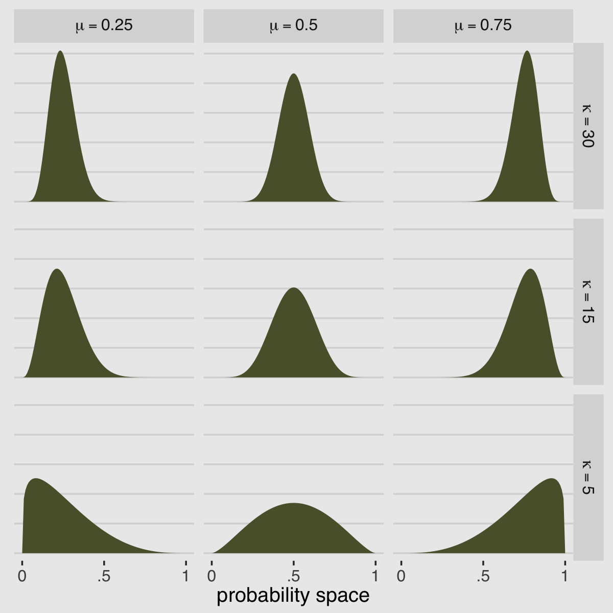
If you’d like to see how to make a similar plot in terms of \(\alpha\) and \(\beta\), see Chapter 6 of my (2020b) ebook wherein I translated Kruschke’s text into tidyverse and brms code.
But remember, we’re not fitting a beta model. We’re using the beta-binomial. “We’re going to bind our linear model to \(\bar p\), so that changes in predictor variables change the central tendency of the distribution” (p. 371). The statistical model we’ll be fitting follows the form
\[\begin{align*} \text{admit}_i & \sim \operatorname{BetaBinomial}(n_i, \bar p_i, \phi)\\ \operatorname{logit} (\bar p_i) & = \alpha_{\text{gid}[i]} \\ \alpha_j & \sim \operatorname{Normal}(0, 1.5) \\ \phi & \sim \operatorname{Exponential}(1). \end{align*}\]
Here the size, \(n\), is defined in the applications column in the data we’ll load in just a moment. In case you’re confused, yes, our statistical model is not quite the same as the one McElreath presented on page 371 in the text. If you look closely, we dropped all mention of \(\theta\) and jumped directly to \(\phi\). Instead of implementing McElreath’s \(\theta = \phi + 2\) trick, we’re going to set the lower bound for \(\phi\) directly. Which brings us to the next issue:
We have an additional complication. The beta-binomial likelihood is not natively supported in brms at this time (see GitHub issue #144). However, brms versions 2.2.0 and above allow users to define custom distributions. To get all the details, you might check out Bürkner’s (2020a) vignette, Define custom response distributions with brms. Happily, Bürkner even used the beta-binomial distribution as the exemplar in the vignette.
Before we get carried away, let’s load the data.
library(rethinking)
data(UCBadmit)
d <-
UCBadmit %>%
mutate(gid = ifelse(applicant.gender == "male", "1", "2"))Unload rethinking and load brms.
I’m not going to go into great detail explaining the ins and outs of making custom distributions for brm(). You’ve got Bürkner’s vignette for that. For our purposes, we need a few preparatory steps. First, we need to use the custom_family() function to define the name and parameters of the beta-binomial distribution for use in brm(). Second, we have to define some functions for Stan which are not defined in Stan itself. We’ll save them as stan_funs. Third, we’ll make a stanvar() statement which will allow us to pass our stan_funs to brm().
beta_binomial2 <- custom_family(
"beta_binomial2", dpars = c("mu", "phi"),
links = c("logit", "log"), lb = c(NA, 2),
type = "int", vars = "vint1[n]"
)
stan_funs <- "
real beta_binomial2_lpmf(int y, real mu, real phi, int T) {
return beta_binomial_lpmf(y | T, mu * phi, (1 - mu) * phi);
}
int beta_binomial2_rng(real mu, real phi, int T) {
return beta_binomial_rng(T, mu * phi, (1 - mu) * phi);
}
"
stanvars <- stanvar(scode = stan_funs, block = "functions")Did you notice the lb = c(NA, 2) portion of the code defining beta_binomial2()? In Bürkner’s vignette, he set the lower bound of phi to zero. Since McElreath wanted the lower bound for \(\phi\) to be 2, we just set that as the default in the likelihood. We should clarify two more points:
First, what McElreath referred to as the shape parameter, \(\theta\), Bürkner called the precision parameter, \(\phi\). In our exposition, above, we followed Kruschke’s convention and called it \(\kappa\). These are all the same thing: \(\theta\), \(\phi\), and \(\kappa\) are all the same thing. Perhaps less confusingly, what McElreath called the pbar parameter, \(\bar p\), Bürkner simply refers to as \(\mu\).
Second, we’ve become accustomed to using the y | trials() ~ ... syntax when defining our formula arguments for binomial models. Here we are replacing trials() with vint(). From Bürkner’s Define custom response distributions with brms vignette, we read:
To provide information about the number of trials (an integer variable), we are going to use the addition argument
vint(), which can only be used in custom families. Simiarily, if we needed to include additional vectors of real data, we would usevreal(). Actually, for this particular example, we could more elegantly apply the addition argumenttrials()instead ofvint()as in the basic binomial model. However, since the present vignette is ment to give a general overview of the topic, we will go with the more general method.We now have all components together to fit our custom beta-binomial model:
b12.1 <-
brm(data = d,
family = beta_binomial2, # here's our custom likelihood
admit | vint(applications) ~ 0 + gid,
prior = c(prior(normal(0, 1.5), class = b),
prior(exponential(1), class = phi)),
iter = 2000, warmup = 1000, cores = 4, chains = 4,
stanvars = stanvars, # note our `stanvars`
seed = 12,
file = "fits/b12.01")Success, our results look a lot like those in the text!
## Family: beta_binomial2
## Links: mu = logit; phi = identity
## Formula: admit | vint(applications) ~ 0 + gid
## Data: d (Number of observations: 12)
## Samples: 4 chains, each with iter = 2000; warmup = 1000; thin = 1;
## total post-warmup samples = 4000
##
## Population-Level Effects:
## Estimate Est.Error l-95% CI u-95% CI Rhat Bulk_ESS Tail_ESS
## gid1 -0.44 0.41 -1.24 0.35 1.00 3107 2410
## gid2 -0.32 0.40 -1.12 0.48 1.00 3175 2674
##
## Family Specific Parameters:
## Estimate Est.Error l-95% CI u-95% CI Rhat Bulk_ESS Tail_ESS
## phi 3.01 0.79 2.05 5.01 1.00 1975 1414
##
## Samples were drawn using sampling(NUTS). For each parameter, Bulk_ESS
## and Tail_ESS are effective sample size measures, and Rhat is the potential
## scale reduction factor on split chains (at convergence, Rhat = 1).Just remember that, perhaps confusingly, what McElreath’s output called theta, our brms output is calling phi. I know; this section is a lot. Keep your chin up! Here’s what the corresponding posterior_samples() data object looks like.
## b_gid1 b_gid2 phi lp__
## 1 0.4041865 -0.8175448 2.821786 -75.31071
## 2 0.5615804 -0.6257836 2.700033 -75.71862
## 3 0.3605382 -0.8058735 2.988188 -75.06070
## 4 0.1551593 -0.5701586 2.952003 -73.58417
## 5 0.1566764 -0.5911687 2.733407 -73.71537
## 6 0.7297896 -0.5087445 3.440514 -77.18120Now we can compute and summarize a contrast between the two genders, what McElreath called da.
library(tidybayes)
post %>%
transmute(da = b_gid1 - b_gid2) %>%
mean_qi(.width = .89) %>%
mutate_if(is.double, round, digits = 3)## da .lower .upper .width .point .interval
## 1 -0.119 -1.001 0.796 0.89 mean qiMuch like in the text, the difference between genders on admission rates is near zero with wide uncertainty intervals spanning in either direction.
To stay within the tidyverse while making the many thin lines in Figure 12.1.a, we’re going to need to do a bit of data processing. First, we’ll want a variable to index the rows in post (i.e., to index the posterior draws). And we’ll want to convert the b_gid2 to the \(\bar p\) metric with the inv_logit_scaled() function. Then we’ll use sample_n() to randomly draw a subset of the posterior draws. Then with the expand() function, we’ll insert a dense sequence of x values ranging between 0 and 1–the parameter space of beta distribution. Finally, we’ll use pmap_dbl() to compute the density values for the rethinking::dbeta2 distribution corresponding to the unique combination of x, p_bar, and phi values in each row.
set.seed(12)
lines <-
post %>%
mutate(iter = 1:n(),
p_bar = inv_logit_scaled(b_gid2)) %>%
sample_n(size = 100) %>%
expand(nesting(iter, p_bar, phi),
x = seq(from = 0, to = 1, by = .005)) %>%
mutate(density = pmap_dbl(list(x, p_bar, phi), rethinking::dbeta2))
str(lines)## tibble [20,100 × 5] (S3: tbl_df/tbl/data.frame)
## $ iter : int [1:20100] 72 72 72 72 72 72 72 72 72 72 ...
## $ p_bar : num [1:20100] 0.324 0.324 0.324 0.324 0.324 ...
## $ phi : num [1:20100] 2.61 2.61 2.61 2.61 2.61 ...
## $ x : num [1:20100] 0 0.005 0.01 0.015 0.02 0.025 0.03 0.035 0.04 0.045 ...
## $ density: num [1:20100] Inf 3.16 2.83 2.64 2.52 ...All that was just for the thin lines. To make the thicker line for the posterior mean, we’ll get tricky with stat_function().
lines %>%
ggplot(aes(x = x, y = density)) +
stat_function(fun = rethinking::dbeta2,
args = list(prob = mean(inv_logit_scaled(post[, "b_gid2"])),
theta = mean(post[, "phi"])),
size = 1.5, color = canva_pal("Green fields")(4)[4]) +
geom_line(aes(group = iter),
alpha = .2, color = canva_pal("Green fields")(4)[4]) +
scale_y_continuous(NULL, breaks = NULL, limits = c(0, 3)) +
labs(subtitle = "distribution of female admission rates",
X = "probability admit")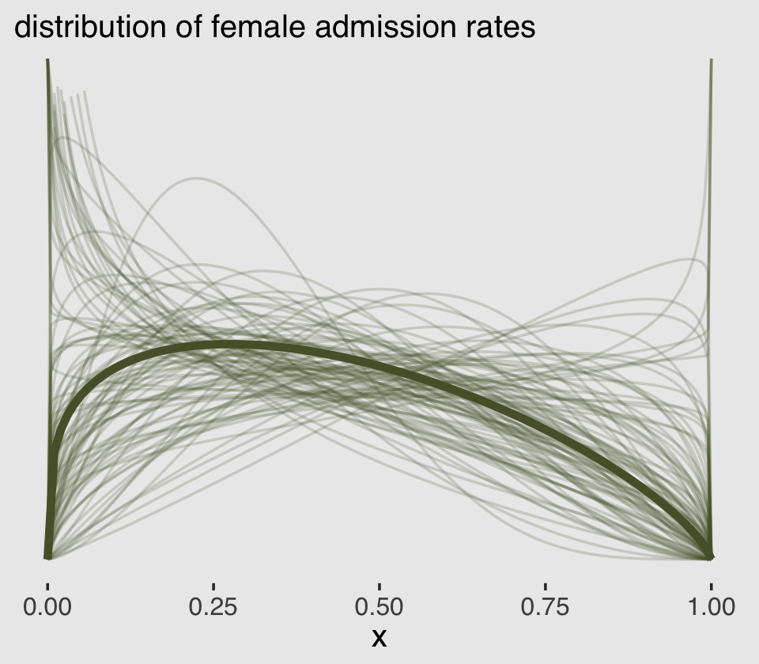
There are other ways to do this. For ideas, check out my blog post, Make rotated Gaussians, Kruschke style.
Before we can do our variant of Figure 12.1.b, we’ll need to define a few more custom functions. The log_lik_beta_binomial2() and posterior_predict_beta_binomial2() functions are required for brms::predict() to work with our family = beta_binomial2 brmfit object. Similarly, posterior_epred_beta_binomial2() is required for brms::fitted() to work properly. And before all that, we need to throw in a line with the expose_functions() function. Just go with it.
expose_functions(b12.1, vectorize = TRUE)
# required to use `predict()`
log_lik_beta_binomial2 <- function(i, prep) {
mu <- prep$dpars$mu[, i]
phi <- prep$dpars$phi
trials <- prep$data$vint1[i]
y <- prep$data$Y[i]
beta_binomial2_lpmf(y, mu, phi, trials)
}
posterior_predict_beta_binomial2 <- function(i, prep, ...) {
mu <- prep$dpars$mu[, i]
phi <- prep$dpars$phi
trials <- prep$data$vint1[i]
beta_binomial2_rng(mu, phi, trials)
}
# required to use `fitted()`
posterior_epred_beta_binomial2 <- function(prep) {
mu <- prep$dpars$mu
trials <- prep$data$vint1
trials <- matrix(trials, nrow = nrow(mu), ncol = ncol(mu), byrow = TRUE)
mu * trials
}With those intermediary steps out of the way, we’re ready to make Figure 12.1.b.
# the prediction intervals
predict(b12.1) %>%
as_tibble() %>%
transmute(ll = Q2.5,
ul = Q97.5) %>%
bind_cols(
# the fitted intervals
fitted(b12.1) %>% as_tibble(),
# the original data used to fit the model) %>%
b12.1$data
) %>%
mutate(case = 1:12) %>%
# plot!
ggplot(aes(x = case)) +
geom_linerange(aes(ymin = ll / applications,
ymax = ul / applications),
color = canva_pal("Green fields")(4)[1],
size = 2.5, alpha = 1/4) +
geom_pointrange(aes(ymin = Q2.5 / applications,
ymax = Q97.5 / applications,
y = Estimate/applications),
color = canva_pal("Green fields")(4)[4],
size = 1/2, shape = 1) +
geom_point(aes(y = admit/applications),
color = canva_pal("Green fields")(4)[2],
size = 2) +
scale_x_continuous(breaks = 1:12) +
scale_y_continuous(breaks = 0:5 / 5, limits = c(0, 1)) +
labs(subtitle = "Posterior validation check",
caption = expression(italic(Note.)*" A = admittance probability"),
y = "A") +
theme(axis.ticks.x = element_blank(),
legend.position = "none")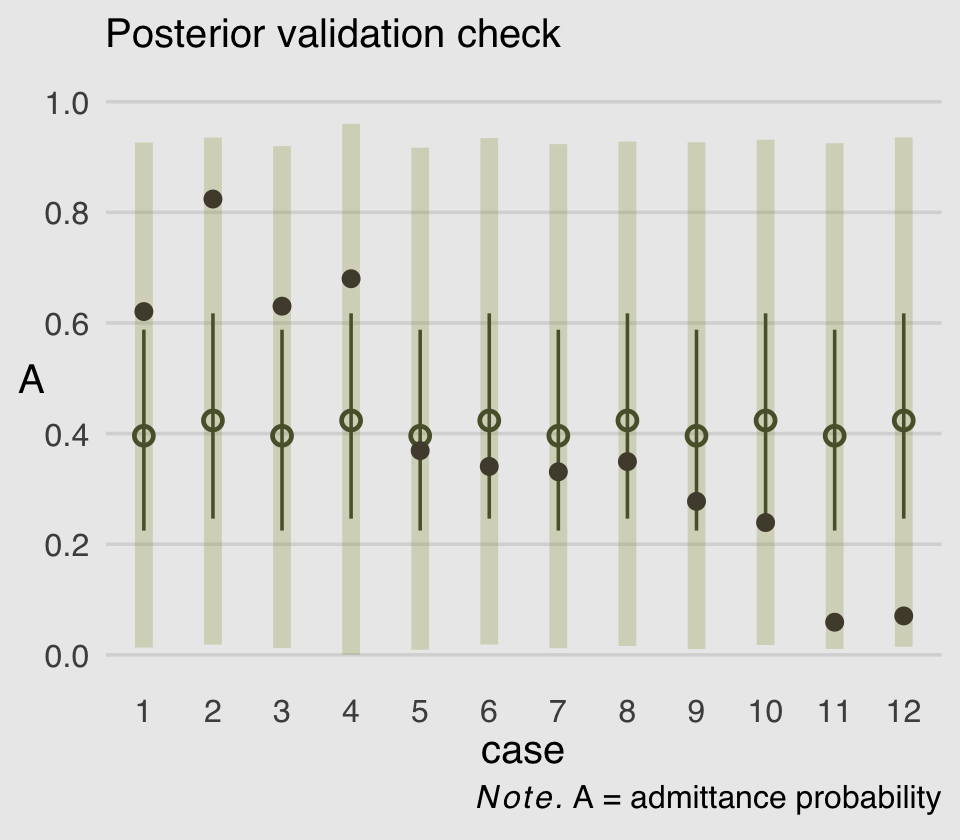
As in the text, the raw data are consistent with the prediction intervals. But those intervals are so incredibly wide, they’re hardly an endorsement of the model. Once we learn about hierarchical models, we’ll be able to do much better.
12.1.2 Negative-binomial or gamma-Poisson.
Recall from the last chapter how the Poisson distribution presumes \(\sigma^2\) scales with \(\mu\). The negative binomial distribution relaxes this assumption and presumes “each Poisson count observation has its own rate. It estimates the shape of a gamma distribution to describe the Poisson rates across cases” (p. 373).
If you execute ?dgamma, you’ll see that base R will allow you to define the gamma distribution with either the shape and rate or the shape and scale. If we define gamma in terms of shape and rate, it follows the formula
\[\text{Gamma} (y | \alpha, \beta) = \frac{\beta^\alpha y^{\alpha - 1} e^{-\beta y}}{\Gamma (\alpha)},\]
where \(\alpha\) is the shape, \(\beta\) is the rate, \(e\) is base of the natural logarithm, and \(\Gamma\) is the gamma function. It turns out the rate and scale parameters are the reciprocals of each other. Thus if you’d like to define a gamma distribution in terms of shape and scale, it would follow the formula
\[\text{Gamma} (y | \alpha, \theta) = \frac{y^{\alpha - 1} e^{-x /\theta}}{\theta^\alpha \Gamma (\alpha)},\]
where \(\alpha\), \(e\), and \(\Gamma\) are all as they were before and \(\theta\) is the scale parameter. If that all wasn’t complicated enough, it turns out there’s one more way to define a gamma distribution. You can use the mean and shape. This would follow the formula
\[\text{Gamma} (y | \mu, \alpha) = \frac{(\frac{\alpha}{\mu})^\alpha}{\Gamma (\alpha)} y^{\alpha - 1} \exp (- \frac{\alpha y}{\mu}),\]
where \(\alpha\) and \(\Gamma\) are still the shape and gamma function, respectively, and \(\mu\) is the mean. I know, this is a lot and it probably all seems really abstract, right now. Think of this section as a reference. As you’ll see after we fit our model, you may well need it. Returning to the content in the text, we might express the gamma-Poisson (negative binomial) as
\[y_i \sim \operatorname{Gamma-Poisson}(\mu, \alpha),\]
where \(\mu\) is the mean or rate, taking the place of \(\lambda\) from the Poisson distribution, and \(\alpha\) is the shape.
library(rethinking)
data(Kline)
d <-
Kline %>%
mutate(p = standardize(log(population)),
contact_id = ifelse(contact == "high", 2L, 1L),
cid = contact)
print(d)## culture population contact total_tools mean_TU p contact_id cid
## 1 Malekula 1100 low 13 3.2 -1.291473310 1 low
## 2 Tikopia 1500 low 22 4.7 -1.088550750 1 low
## 3 Santa Cruz 3600 low 24 4.0 -0.515764892 1 low
## 4 Yap 4791 high 43 5.0 -0.328773359 2 high
## 5 Lau Fiji 7400 high 33 5.0 -0.044338980 2 high
## 6 Trobriand 8000 high 19 4.0 0.006668287 2 high
## 7 Chuuk 9200 high 40 3.8 0.098109204 2 high
## 8 Manus 13000 low 28 6.6 0.324317564 1 low
## 9 Tonga 17500 high 55 5.4 0.518797917 2 high
## 10 Hawaii 275000 low 71 6.6 2.321008320 1 lowUnload rethinking and load brms.
If you take a look of McElreath’s m12.2, you’ll see it’s a gamma-Poisson version of the non-linear model he fit in last chapter, m11.11. You might also recall that we had to employ somewhat complicated non-linear syntax to translate that model into brms. Instead of jumping straight into a similarly complicated gamma-Poisson version of that model, I’m going to warm us up with a simple intercept-only model of the data. The formula will be
\[\begin{align*} \text{total_tools}_i & \sim \operatorname{Gamma-Poisson} (\mu, \alpha) \\ \text{log}(\mu) & = \beta_0 \\ \beta_0 & \sim \operatorname{Normal}(3, 0.5) \\ \alpha & \sim \operatorname{Gamma}(0.01, 0.01), \end{align*}\]
where we have deviated from McElreath’s convention of using \(\alpha\) for the model in favor \(\beta_0\). This is because brms parameterizes the gamma likelihood in terms of \(\mu\) and shape and, as we discussed above, shape is typically denoted as \(\alpha\). I mean, technically we could refer to the shape parameter as \(\psi\) or \(\xi\) or whatever, but then we’d just be abandoning one convention for another. I just don’t think there’s any way to win, here. Sigh. The prior for \(\beta_0\) is the same one we used for the intercept way back for model b11.9. We have assigned a gamma prior for our troublesome new \(\alpha\) (shape) parameter. Here’s where that prior came from.
## prior class coef group resp dpar nlpar bound
## 1 student_t(3, 3.4, 2.5) Intercept
## 2 gamma(0.01, 0.01) shapegamma(0.01, 0.01) is the brms default for the shape parameter in this model. Within brms, priors using the gamma distribution are based on the shape-rate (\(\alpha\)-\(\theta\)) parameterization. This is what \(\operatorname{Gamma}(0.01, 0.01)\) looks like.
ggplot(data = tibble(x = seq(from = 0, to = 60, by = .1)),
aes(x = x)) +
geom_ribbon(aes(ymin = 0, ymax = dgamma(x, 0.01, 0.01)),
color = "transparent",
fill = canva_pal("Green fields")(4)[2]) +
scale_x_continuous(NULL) +
scale_y_continuous(NULL, breaks = NULL) +
coord_cartesian(xlim = c(0, 50)) +
ggtitle(expression(brms~default~gamma(0.01*", "*0.01)~shape~prior))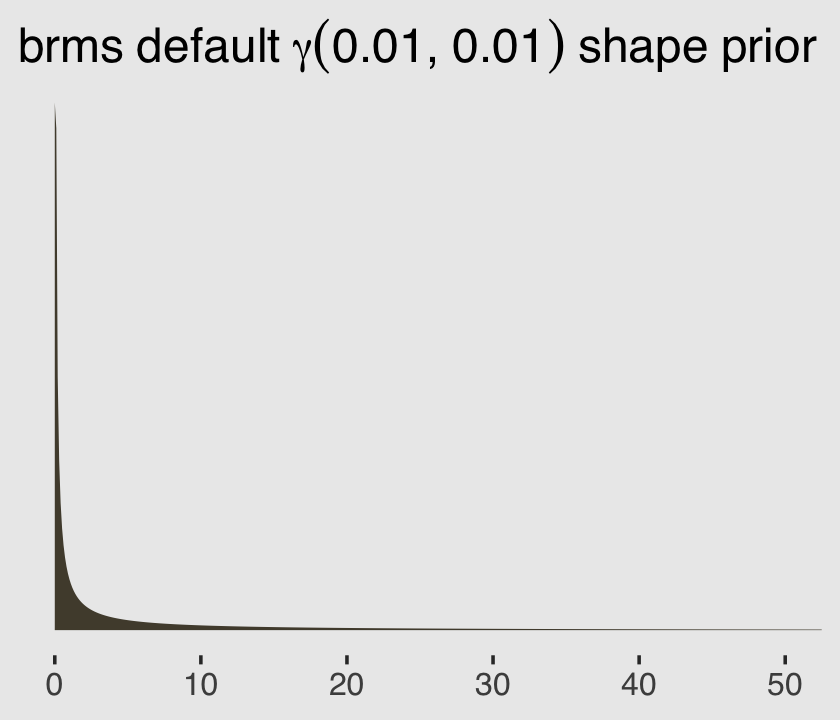
Let’s fit the model.
b12.2a <-
brm(data = d,
family = negbinomial,
total_tools ~ 1,
prior = c(prior(normal(3, 0.5), class = Intercept), # beta_0
prior(gamma(0.01, 0.01), class = shape)), # alpha
iter = 2000, warmup = 1000, cores = 4, chains = 4,
seed = 12,
file = "fits/b12.02a")Notice how you use the language of family = negbinomial to fit these models with brms. Here’s the summary.
## Family: negbinomial
## Links: mu = log; shape = identity
## Formula: total_tools ~ 1
## Data: d (Number of observations: 10)
## Samples: 4 chains, each with iter = 2000; warmup = 1000; thin = 1;
## total post-warmup samples = 4000
##
## Population-Level Effects:
## Estimate Est.Error l-95% CI u-95% CI Rhat Bulk_ESS Tail_ESS
## Intercept 3.50 0.16 3.19 3.81 1.00 2632 2527
##
## Family Specific Parameters:
## Estimate Est.Error l-95% CI u-95% CI Rhat Bulk_ESS Tail_ESS
## shape 4.86 2.71 1.40 11.94 1.00 2504 2244
##
## Samples were drawn using sampling(NUTS). For each parameter, Bulk_ESS
## and Tail_ESS are effective sample size measures, and Rhat is the potential
## scale reduction factor on split chains (at convergence, Rhat = 1).The intercept is our estimate of \(\log \mu\), similar to \(\log \lambda\) from a simple Poisson model. The shape is our estimate of, well, the shape (\(\alpha\)). To help us get a sense of what this model is, let’s use the brms::predict() function to return random samples of the poster predictive distribution. Because we want random samples instead of summary values, we will specify summary = F. Let’s take a look of what this returns.
## num [1:4000, 1:10] 32 54 31 29 6 37 47 55 46 29 ...
## - attr(*, "dimnames")=List of 2
## ..$ : NULL
## ..$ : NULLBecause we have 4,000 posterior iterations, we also get back 4,000 rows. We have 10 columns, which correspond to the 10 rows (i.e., cultures) in the original data. In the next block, we’ll put convert that output to a data frame and wrangle a little before plotting the results.
p %>%
data.frame() %>%
set_names(d$culture) %>%
pivot_longer(everything(),
names_to = "culture",
values_to = "lambda") %>%
ggplot(aes(x = lambda)) +
geom_density(color = "transparent", fill = canva_pal("Green fields")(4)[2]) +
scale_y_continuous(NULL, breaks = NULL) +
scale_x_continuous(expression(lambda["[culture]"]), breaks = 0:2 * 100) +
coord_cartesian(xlim = c(0, 210)) +
facet_wrap(~culture, nrow = 2)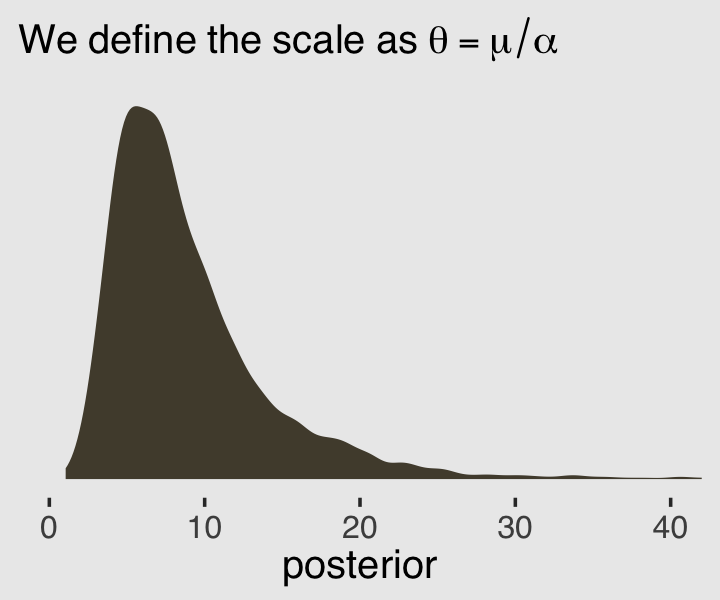
Because this model had no predictors, we have similar posterior-predictive distributions for each case in the data. It’s important, however, to be very clear of what these posterior-predictive distributions are of. They are not of the data, per se. Let’s look back at the text:
A negative-binomial model, more usefully called a gamma-Poisson model, assumes that each Poisson count observation has its own rate. It estimates the shape of the gamma distribution to describe the Poisson rates across cases. (p. 373, emphasis in the original)
As a reminder, the “rate” for the Poisson distribution is just another word for the mean, also called \(\lambda\). So unlike a simple Poisson model where we use the individual cases to estimate one overall \(\lambda\), here we’re presuming each case has it’s own \(\lambda_i\). There are 10 \(\lambda_i\) values that generated our data and if we look at those \(\lambda_i\) values on the whole, their distribution can be described with a gamma distribution. And again, this is not a gamma distribution for our data. This is a gamma distribution of the \(\lambda_i\) values from the 10 separate Poisson distributions that presumably made our data.
After exponentiating the intercept parameter (\(\log \mu\)), here are the posterior distributions for those two gamma parameters.
post <- posterior_samples(b12.2a)
post %>%
mutate(mu = exp(b_Intercept),
alpha = shape) %>%
pivot_longer(mu:alpha,
names_to = "parameter") %>%
ggplot(aes(x = value)) +
geom_density(color = "transparent", fill = canva_pal("Green fields")(4)[2]) +
scale_y_continuous(NULL, breaks = NULL) +
labs(title = "Behold our gamma parameters!",
x = "posterior") +
facet_wrap(~parameter, scales = "free", labeller = label_parsed)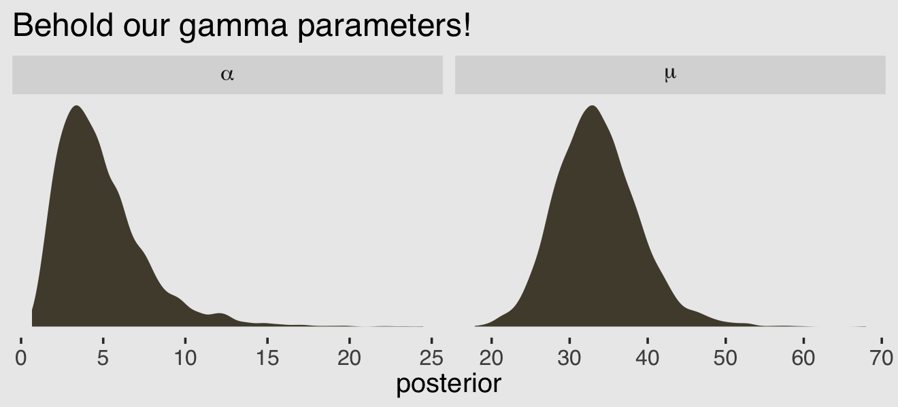
We might want to use these parameters estimates to visualize the model-implied gamma distribution of \(\lambda\) parameters. But recall that the base R dgamma() function doesnt’ take the mean. It is based on either the shape and rate or the shape andscale`. Since we already have the shape (\(\alpha\)), we need a way to compute the scale or rate. Happily, we can define the scale in terms of the mean and the shape with the equation
\[\theta = \frac{\mu}{\alpha}.\]
Behold \(\theta\) in a plot.
post %>%
mutate(mu = exp(b_Intercept),
alpha = shape) %>%
mutate(theta = mu / alpha) %>%
ggplot(aes(x = theta)) +
geom_density(color = "transparent", fill = canva_pal("Green fields")(4)[2]) +
scale_y_continuous(NULL, breaks = NULL) +
labs(subtitle = expression(We~define~the~scale~as~theta==mu/alpha),
x = "posterior") +
coord_cartesian(xlim = c(0, 40))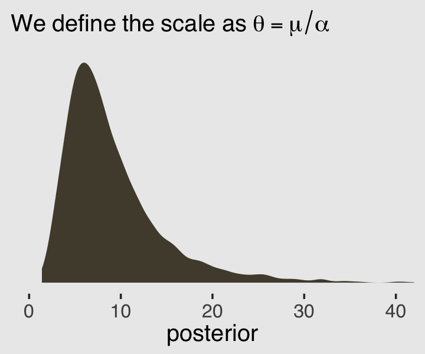
Now we know how to get both \(\alpha\) and \(\theta\) from the model, we can pump them into dgamma() to get a sense of the model-implied gamma distribution, the presumed underlying distribution of \(\lambda\) values that generated the total_tools data.
set.seed(12)
# wrangle to get 200 draws
post %>%
mutate(iter = 1:n(),
alpha = shape,
theta = exp(b_Intercept) / shape) %>%
sample_n(size = 200) %>%
expand(nesting(iter, alpha, theta),
x = 0:250) %>%
mutate(density = dgamma(x, shape = alpha, scale = theta)) %>%
# plot
ggplot(aes(x = x, y = density)) +
geom_line(aes(group = iter),
alpha = .1, color = canva_pal("Green fields")(4)[4]) +
scale_y_continuous(NULL, breaks = NULL) +
labs(subtitle = expression("200 credible gamma densities for "*lambda),
x = expression(lambda)) +
coord_cartesian(xlim = c(0, 170),
ylim = c(0, 0.045))Now we’ve warmed up with an intercept-only gamma-Poisson, it’s time to fit a brms version of McElreath’s m12.2. Our model formula will be
\[\begin{align*} \text{total_tools_i} & \sim \operatorname{Gamma-Poisson} (\mu_i, \alpha) \\ \mu_i & = \exp (\beta_{0,\text{cid}[i]}) \text{population}_i^{\beta_{1,\text{cid}[i]}} / \gamma \\ \beta_{0,j} & \sim \operatorname{Normal}(1, 1) \\ \beta_{1,j} & \sim \operatorname{Exponential}(1) \\ \gamma & \sim \operatorname{Exponential}(1) \\ \alpha & \sim \operatorname{Exponential}(1), \end{align*}\]
where \(\mu\) and \(\alpha\) and the mean and shape of the gamma distribution for the case-specific \(\lambda\) parameters. Here’s how we might fit that model with brms.
b12.2b <-
brm(data = d,
family = negbinomial(link = "identity"),
bf(total_tools ~ exp(b0) * population^b1 / g,
b0 + b1 ~ 0 + cid,
g ~ 1,
nl = TRUE),
prior = c(prior(normal(1, 1), nlpar = b0),
prior(exponential(1), nlpar = b1, lb = 0),
prior(exponential(1), nlpar = g, lb = 0),
prior(exponential(1), class = shape)),
iter = 2000, warmup = 1000, chains = 4, cores = 4,
seed = 12,
control = list(adapt_delta = .95),
file = "fits/b12.02b") Here is the model summary.
## Family: negbinomial
## Links: mu = identity; shape = identity
## Formula: total_tools ~ exp(b0) * population^b1/g
## b0 ~ 0 + cid
## b1 ~ 0 + cid
## g ~ 1
## Data: d (Number of observations: 10)
## Samples: 4 chains, each with iter = 2000; warmup = 1000; thin = 1;
## total post-warmup samples = 4000
##
## Population-Level Effects:
## Estimate Est.Error l-95% CI u-95% CI Rhat Bulk_ESS Tail_ESS
## b0_cidhigh 1.04 0.92 -0.76 2.79 1.00 2161 2394
## b0_cidlow 0.90 0.82 -0.75 2.47 1.00 2262 2310
## b1_cidhigh 0.26 0.13 0.03 0.51 1.00 1214 850
## b1_cidlow 0.25 0.10 0.06 0.45 1.00 1429 1337
## g_Intercept 1.04 0.86 0.15 3.37 1.00 1832 2070
##
## Family Specific Parameters:
## Estimate Est.Error l-95% CI u-95% CI Rhat Bulk_ESS Tail_ESS
## shape 3.69 1.67 1.21 7.80 1.00 2369 1533
##
## Samples were drawn using sampling(NUTS). For each parameter, Bulk_ESS
## and Tail_ESS are effective sample size measures, and Rhat is the potential
## scale reduction factor on split chains (at convergence, Rhat = 1).Compute and check the PSIS-LOO estimates along with their diagnostic Pareto \(k\) values.
## Warning: Found 1 observations with a pareto_k > 0.7 in model 'b12.2b'. It is recommended to set 'reloo = TRUE'
## in order to calculate the ELPD without the assumption that these observations are negligible. This will refit
## the model 1 times to compute the ELPDs for the problematic observations directly.## Warning: Found 1 observations with a pareto_k > 0.7 in model 'b12.2b'. It is recommended to set 'reloo = TRUE'
## in order to calculate the ELPD without the assumption that these observations are negligible. This will refit
## the model 1 times to compute the ELPDs for the problematic observations directly.##
## Computed from 4000 by 10 log-likelihood matrix
##
## Estimate SE
## elpd_loo -41.4 1.7
## p_loo 1.3 0.3
## looic 82.9 3.4
## ------
## Monte Carlo SE of elpd_loo is NA.
##
## Pareto k diagnostic values:
## Count Pct. Min. n_eff
## (-Inf, 0.5] (good) 9 90.0% 1429
## (0.5, 0.7] (ok) 0 0.0% <NA>
## (0.7, 1] (bad) 1 10.0% 329
## (1, Inf) (very bad) 0 0.0% <NA>
## See help('pareto-k-diagnostic') for details.One of those Pareto \(k\) values is still on the high side. Can you guess which one that is?
d %>%
mutate(k = b12.2b$criteria$loo$diagnostics$pareto_k) %>%
filter(k > .7) %>%
select(culture, k)## culture k
## 1 Hawaii 0.7043926Before we can make our version of Figure 12.2, we’ll need to reload b11.11 from last chapter. One way is with the readRDS() function.
Here we make the left panel of the figure.
# the new data
nd <-
distinct(d, cid) %>%
expand(cid,
population = seq(from = 0, to = 300000, length.out = 100))
p1 <-
# compute the expected trajectories
fitted(b11.11,
newdata = nd,
probs = c(.055, .945)) %>%
data.frame() %>%
bind_cols(nd) %>%
# plot
ggplot(aes(x = population, group = cid, color = cid)) +
geom_smooth(aes(y = Estimate, ymin = Q5.5, ymax = Q94.5, fill = cid),
stat = "identity",
alpha = 1/4, size = 1/2) +
geom_point(data = bind_cols(d, b11.11$criteria$loo$diagnostics),
aes(y = total_tools, size = pareto_k),
alpha = 4/5) +
labs(subtitle = "pure Poisson model",
y = "total tools")Now make the right panel.
# for the annotation
text <-
distinct(d, cid) %>%
mutate(population = c(150000, 110000),
total_tools = c(57, 69),
label = str_c(cid, " contact"))
p2 <-
fitted(b12.2b,
newdata = nd,
probs = c(.055, .945)) %>%
data.frame() %>%
bind_cols(nd) %>%
ggplot(aes(x = population, group = cid, color = cid)) +
geom_smooth(aes(y = Estimate, ymin = Q5.5, ymax = Q94.5, fill = cid),
stat = "identity",
alpha = 1/4, size = 1/2) +
geom_point(data = bind_cols(d, b12.2b$criteria$loo$diagnostics),
aes(y = total_tools, size = pareto_k),
alpha = 4/5) +
geom_text(data = text,
aes(y = total_tools, label = label)) +
scale_y_continuous(NULL, labels = NULL) +
labs(subtitle = "gamma-Poisson model")Combine the two ggplots with patchwork syntax to make the full version of Figure 12.2.
library(patchwork)
(p1 | p2) &
scale_fill_manual(values = canva_pal("Green fields")(4)[c(4, 1)]) &
scale_color_manual(values = canva_pal("Green fields")(4)[c(4, 1)]) &
scale_size(range = c(2, 5)) &
scale_x_continuous("population", breaks = c(0, 50000, 150000, 250000)) &
coord_cartesian(xlim = range(d$population),
ylim = range(d$total_tools)) &
theme(axis.ticks = element_blank(),
legend.position = "none")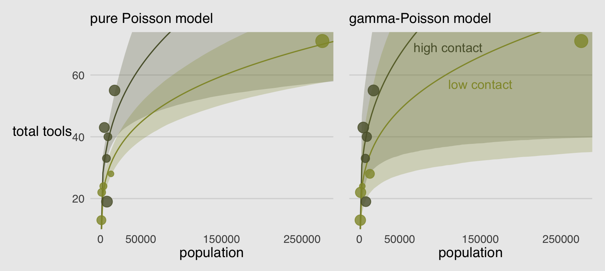
Oh man!
Recall that Hawaii was a highly influential point in the pure Poisson model. It does all the work of pulling the low-contact trend down. In this new model, Hawaii is still influential, but it exerts a lot less influence on the trends. Now the high and low contact trends are much more similar, very hard to reliably distinguish. This is because the gamma-Poisson model expects rate variation, and the estimated amount of variation is quite large. Population is still strongly related to the total tools, but the influence of contact rate has greatly diminished. (p. 374)
Before we move on, let’s use predict() to generate posterior predictive distributions for each of our 10 cultures.
predict(b12.2b,
summary = F) %>%
data.frame() %>%
set_names(d$culture) %>%
pivot_longer(everything(),
names_to = "culture",
values_to = "lambda") %>%
left_join(d) %>%
ggplot(aes(x = lambda, y = 0)) +
stat_halfeye(point_interval = mean_qi, .width = .5,
fill = canva_pal("Green fields")(4)[2],
color = canva_pal("Green fields")(4)[1]) +
geom_vline(aes(xintercept = total_tools),
color = canva_pal("Green fields")(4)[3]) +
scale_y_continuous(NULL, breaks = NULL) +
scale_x_continuous(expression(lambda["[culture]"]), breaks = 0:2 * 100) +
coord_cartesian(xlim = c(0, 210)) +
facet_wrap(~culture, nrow = 2)Because we used predictors in the model, this time the posterior predictive distributions differ across the cultures. The mean and interquartile range of each distribution are marked off by the light-green dot and horizontal line below each. The vertical lines in the foreground mark off the corresponding total_tools values from the data. Recall that these distributions are not based on the total_tools values themselves, but rather are estimates of the \(\lambda\) values from the underlying Poisson distributions that might have generated such total_tools values.
12.1.3 Over-dispersion, entropy, and information criteria.
In terms of model comparison using information criteria, a beta-binomial model is a binomial model, and a gamma-Poisson (negative-binomial) is a Poisson model.
You should not use WAIC and PSIS with these models, however, unless you are very sure of what you are doing. The reason is that while ordinary binomial and Poisson models can be aggregated and disaggregated across rows in the data, without changing any causal assumptions, the same is not true of beta-binomial and gamma-Poisson models. The reason is that a beta-binomial or gamma-Poisson likelihood applies an unobserved parameter to each row in the data. When we then go to calculate log-likelihoods, how the data are structured will determine how the beta-distributed or gamma-distributed variation enters the model. (pp. 374–375)
12.2 Zero-inflated outcomes
Very often, the things we can measure are not emissions from any pure process. Instead, they are mixtures of multiple processes. Whenever there are different causes for the same observation, then a mixture model may be useful. A mixture model uses more than one simple probability distribution to model a mixture of causes. In effect, these models use more than one likelihood for the same outcome variable.
Count variables are especially prone to needing a mixture treatment. The reason is that a count of zero can often arise more than one way. A “zero” means that nothing happened, and nothing can happen either because the rate of events is low or rather because the process that generates events failed to get started. (p. 376, emphasis in the original)
12.2.0.1 Rethinking: Breaking the law.
McElreath discussed how advances in computing have made it possible for working scientists to define their own data generating models. If you’d like to dive deeper into the topic, check out Bürkner’s (2020a) vignette, Define custom response distributions with brms.
12.2.1 Example: Zero-inflated Poisson.
Do you remember the monk data from back in Chapter 11? Here we simulate some more. This time we’ll work in a little alcohol.
# define parameters
prob_drink <- 0.2 # 20% of days
rate_work <- 1 # average 1 manuscript per day
# sample one year of production
n <- 365
# simulate days monks drink
set.seed(365)
drink <- rbinom(n, 1, prob_drink)
# simulate manuscripts completed
y <- (1 - drink) * rpois(n, rate_work)We’ll put those data in a tidy tibble before plotting.
d <-
tibble(drink = factor(drink, levels = 1:0),
y = y)
ggplot(data = d, aes(x = y)) +
geom_histogram(aes(fill = drink),
binwidth = 1, size = 1/10, color = "grey92") +
scale_fill_manual(values = canva_pal("Green fields")(4)[1:2]) +
xlab("Manuscripts completed") +
theme(legend.position = "none")
With these data, the likelihood of observing zero on y, (i.e., the likelihood zero manuscripts were completed on a given occasion) is
\[\begin{align*} \operatorname{Pr} (0 | p, \lambda) & = \operatorname{Pr} (\text{drink} | p) + \operatorname{Pr} (\text{work} | p) \times \operatorname{Pr} (0 | \lambda) \\ & = p + (1 - p) \exp (- \lambda). \end{align*}\]
And
since the Poisson likelihood of \(y\) is \(\text{Pr} (y | \lambda) = \lambda^y \exp (- \lambda) / y!\), the likelihood of \(y = 0\) is just \(\exp (- \lambda)\). The above is just the mathematics for:
The probability of observing a zero is the probability that the monks didn’t drink OR (\(+\)) the probability that the monks worked AND (\(\times\)) failed to finish anything.
And the likelihood of a non-zero value \(y\) is:
\[\operatorname{Pr} (y | y > 0, p, \lambda) = \operatorname{Pr} (\text{drink} | p) (0) + \operatorname{Pr} (\text{work} | p) \operatorname{Pr} (y | \lambda) = (1 - p) \frac {\lambda^y \exp (- \lambda)}{y!}\]
Since drinking monks never produce \(y > 0\), the expression above is just the chance the monks both work \(1 - p\), and finish \(y\) manuscripts. (pp. 377–378, emphasis in the original)
So letting \(p\) be the probability \(y\) is zero and \(\lambda\) be the shape of the distribution, the zero-inflated Poisson (\(\operatorname{ZIPoisson}\)) regression model might take the basic form
\[\begin{align*} y_i & \sim \operatorname{ZIPoisson} (p_i, \lambda_i)\\ \operatorname{logit} (p_i) & = \alpha_p + \beta_p x_i \\ \log (\lambda_i) & = \alpha_\lambda + \beta_\lambda x_i, \end{align*}\]
where both parameters in the likelihood, \(p_i\) and \(\lambda_i\) might get their own statistical model, making this a special case of what Bürkner (2020b) calls distributional models. One last thing to note is that in brms, \(p_i\) is denoted zi. To fit a zero-inflated Poisson model with brms, make sure to specify the correct likelihood with family = zero_inflated_poisson. To use a non-default prior for zi, make sure to indicate class = zi within the prior() function.
b12.3 <-
brm(data = d,
family = zero_inflated_poisson,
y ~ 1,
prior = c(prior(normal(-1.5, 1), class = Intercept),
prior(beta(2, 6), class = zi)), # the brms default is beta(1, 1)
iter = 2000, warmup = 1000, chains = 4, cores = 4,
seed = 12,
file = "fits/b12.03") ## Family: zero_inflated_poisson
## Links: mu = log; zi = identity
## Formula: y ~ 1
## Data: d (Number of observations: 365)
## Samples: 4 chains, each with iter = 2000; warmup = 1000; thin = 1;
## total post-warmup samples = 4000
##
## Population-Level Effects:
## Estimate Est.Error l-95% CI u-95% CI Rhat Bulk_ESS Tail_ESS
## Intercept -0.02 0.09 -0.20 0.16 1.00 1115 1401
##
## Family Specific Parameters:
## Estimate Est.Error l-95% CI u-95% CI Rhat Bulk_ESS Tail_ESS
## zi 0.21 0.06 0.10 0.32 1.00 1237 1410
##
## Samples were drawn using sampling(NUTS). For each parameter, Bulk_ESS
## and Tail_ESS are effective sample size measures, and Rhat is the potential
## scale reduction factor on split chains (at convergence, Rhat = 1).If you look at the Zero-inflated and hurdle models section of Bürkner’s (2020i) Parameterization of response distributions in brms document, you’ll see the zero-inflated Poisson is set up a little differently in brms than it is in rethinking. The difference did not influence the estimate for the intercept, \(\lambda\). In both here and in the text, \(\lambda\) was about zero. However, it did influence the summary of zi. Note how McElreath’s mean( inv_logit( post$ap ) ) returned 0.2241255 Seems rather close to our zi estimate of 0.214. Hopefully it’s clear that zi in brms is already in the probability metric. There’s no need to convert it. You can further confirm this by looking at the second line from the print() output, Links: mu = log; zi = identity. When there are no predictors for zi, the brms default is to use the identity link. In the text, however, McElreath used the logit link for p.
In the prior argument, we used beta(2, 6) for zi and also mentioned in the margin that the brms default is beta(1, 1). The beta distribution ranges from 0 to 1, making it a natural distribution to use for priors on probabilities when using the identity link. To give you a sense of what those two versions of the beta look like, let’s plot.
A typical way to plot a beta distribution would be to use the base R dbeta() function. Let’s try a different approach, instead. The tidybayes package includes a parse_dist() function which takes the kind of string specifications you would usually include in the brms::prior() function and converts them into a format one can plot with. For example, here’s what the preparatory work would be in our case.
priors <-
c(prior(beta(1, 1), class = zi),
prior(beta(2, 6), class = zi))
priors %>%
parse_dist(prior)## prior class coef group resp dpar nlpar bound .dist .args
## 1 beta(1, 1) zi beta 1, 1
## 2 beta(2, 6) zi beta 2, 6The first several columns look a lot like the kind of output we’d get from the brms::get_prior() function. The parse_dist() function added those last two columns. Here we put them to work by feeding them into a ggplot.
priors %>%
parse_dist(prior) %>%
ggplot(aes(y = prior, dist = .dist, args = .args, fill = prior)) +
stat_dist_halfeye(.width = .95) +
scale_fill_manual(values = canva_pal("Green fields")(4)[c(4, 1)]) +
scale_x_continuous("zi", breaks = c(0, .5, 1)) +
ylab(NULL) +
theme(legend.position = "none")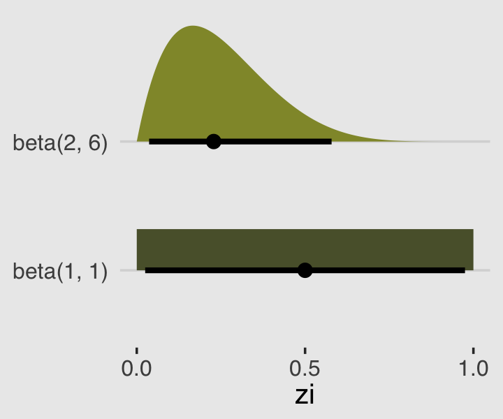
Whereas the brms default is flat, our prior guided the posterior a bit toward 0. In case you were curious, we might write our statistical model for b12.3 as
\[\begin{align*} y_i & \sim \operatorname{ZIPoisson} (p, \lambda) \\ p & = \alpha_p \\ \log \lambda & = \alpha_\lambda \\ \alpha_p & \sim \operatorname{Beta}(2, 6) \\ \alpha_\lambda & \sim \operatorname{Normal}(-1.5, 1). \end{align*}\]
Anyway, here’s that exponentiated \(\alpha_\lambda\).
## Estimate Est.Error Q2.5 Q97.5
## 0.9791160 1.0962957 0.8173027 1.167998212.2.1.1 Overthinking: Zero-inflated Poisson calculations in Stan.
If you’re curious, here’s the Stan code underlying our brms fit, b12.3.
## // generated with brms 2.13.0
## functions {
##
## /* zero-inflated poisson log-PDF of a single response
## * Args:
## * y: the response value
## * lambda: mean parameter of the poisson distribution
## * zi: zero-inflation probability
## * Returns:
## * a scalar to be added to the log posterior
## */
## real zero_inflated_poisson_lpmf(int y, real lambda, real zi) {
## if (y == 0) {
## return log_sum_exp(bernoulli_lpmf(1 | zi),
## bernoulli_lpmf(0 | zi) +
## poisson_lpmf(0 | lambda));
## } else {
## return bernoulli_lpmf(0 | zi) +
## poisson_lpmf(y | lambda);
## }
## }
## /* zero-inflated poisson log-PDF of a single response
## * logit parameterization of the zero-inflation part
## * Args:
## * y: the response value
## * lambda: mean parameter of the poisson distribution
## * zi: linear predictor for zero-inflation part
## * Returns:
## * a scalar to be added to the log posterior
## */
## real zero_inflated_poisson_logit_lpmf(int y, real lambda, real zi) {
## if (y == 0) {
## return log_sum_exp(bernoulli_logit_lpmf(1 | zi),
## bernoulli_logit_lpmf(0 | zi) +
## poisson_lpmf(0 | lambda));
## } else {
## return bernoulli_logit_lpmf(0 | zi) +
## poisson_lpmf(y | lambda);
## }
## }
## /* zero-inflated poisson log-PDF of a single response
## * log parameterization for the poisson part
## * Args:
## * y: the response value
## * eta: linear predictor for poisson distribution
## * zi: zero-inflation probability
## * Returns:
## * a scalar to be added to the log posterior
## */
## real zero_inflated_poisson_log_lpmf(int y, real eta, real zi) {
## if (y == 0) {
## return log_sum_exp(bernoulli_lpmf(1 | zi),
## bernoulli_lpmf(0 | zi) +
## poisson_log_lpmf(0 | eta));
## } else {
## return bernoulli_lpmf(0 | zi) +
## poisson_log_lpmf(y | eta);
## }
## }
## /* zero-inflated poisson log-PDF of a single response
## * log parameterization for the poisson part
## * logit parameterization of the zero-inflation part
## * Args:
## * y: the response value
## * eta: linear predictor for poisson distribution
## * zi: linear predictor for zero-inflation part
## * Returns:
## * a scalar to be added to the log posterior
## */
## real zero_inflated_poisson_log_logit_lpmf(int y, real eta, real zi) {
## if (y == 0) {
## return log_sum_exp(bernoulli_logit_lpmf(1 | zi),
## bernoulli_logit_lpmf(0 | zi) +
## poisson_log_lpmf(0 | eta));
## } else {
## return bernoulli_logit_lpmf(0 | zi) +
## poisson_log_lpmf(y | eta);
## }
## }
## // zero-inflated poisson log-CCDF and log-CDF functions
## real zero_inflated_poisson_lccdf(int y, real lambda, real zi) {
## return bernoulli_lpmf(0 | zi) + poisson_lccdf(y | lambda);
## }
## real zero_inflated_poisson_lcdf(int y, real lambda, real zi) {
## return log1m_exp(zero_inflated_poisson_lccdf(y | lambda, zi));
## }
## }
## data {
## int<lower=1> N; // number of observations
## int Y[N]; // response variable
## int prior_only; // should the likelihood be ignored?
## }
## transformed data {
## }
## parameters {
## real Intercept; // temporary intercept for centered predictors
## real<lower=0,upper=1> zi; // zero-inflation probability
## }
## transformed parameters {
## }
## model {
## // initialize linear predictor term
## vector[N] mu = Intercept + rep_vector(0, N);
## // priors including all constants
## target += normal_lpdf(Intercept | -1.5, 1);
## target += beta_lpdf(zi | 2, 6);
## // likelihood including all constants
## if (!prior_only) {
## for (n in 1:N) {
## target += zero_inflated_poisson_log_lpmf(Y[n] | mu[n], zi);
## }
## }
## }
## generated quantities {
## // actual population-level intercept
## real b_Intercept = Intercept;
## }12.3 Ordered categorical outcomes
It is very common in the social sciences, and occasional in the natural sciences, to have an outcome variable that is discrete, like a count, but in which the values merely indicate different ordered levels along some dimension. For example, if I were to ask you how much you like to eat fish, on a scale from 1 to 7, you might say 5. If I were to ask 100 people the same question, I’d end up with 100 values between 1 and 7. In modeling each outcome value, I’d have to keep in mind that these values are ordered, because 7 is greater than 6, which is greater than 5, and so on. The result is a set of ordered categories. Unlike a count, the differences in value are not necessarily equal….
In principle, an ordered categorical variable is just a multinomial prediction problem (page 359). But the constraint that the categories be ordered demands special treatment….
The conventional solution is to use a cumulative link function. The cumulative probability of a value is the probability of that value or any smaller value. In the context of ordered categories, the cumulative probability of 3 is the sum of the probabilities of 3, 2, and 1. Ordered categories by convention begin at 1, so a result less than 1 has no probability at all. By linking a linear model to cumulative probability, it is possible to guarantee the ordering of the outcomes. (p. 380, emphasis in the original)
12.3.1 Example: Moral intuition.
Let’s get the Trolley data from rethinking (see Cushman et al., 2006).
Unload rethinking and load brms.
Use the dplyr::glimpse() to get a sense of the dimensions of the data.
## Rows: 9,930
## Columns: 12
## $ case <fct> cfaqu, cfbur, cfrub, cibox, cibur, cispe, fkaqu, fkboa, fkbox, fkbur, fkcar, fkspe, fkswi…
## $ response <int> 4, 3, 4, 3, 3, 3, 5, 4, 4, 4, 4, 4, 4, 5, 4, 4, 4, 4, 4, 3, 3, 3, 4, 4, 5, 4, 4, 3, 4, 4,…
## $ order <int> 2, 31, 16, 32, 4, 9, 29, 12, 23, 22, 27, 19, 14, 3, 18, 15, 30, 5, 1, 13, 20, 17, 28, 10,…
## $ id <fct> 96;434, 96;434, 96;434, 96;434, 96;434, 96;434, 96;434, 96;434, 96;434, 96;434, 96;434, 9…
## $ age <int> 14, 14, 14, 14, 14, 14, 14, 14, 14, 14, 14, 14, 14, 14, 14, 14, 14, 14, 14, 14, 14, 14, 1…
## $ male <int> 0, 0, 0, 0, 0, 0, 0, 0, 0, 0, 0, 0, 0, 0, 0, 0, 0, 0, 0, 0, 0, 0, 0, 0, 0, 0, 0, 0, 0, 0,…
## $ edu <fct> Middle School, Middle School, Middle School, Middle School, Middle School, Middle School,…
## $ action <int> 0, 0, 0, 0, 0, 0, 1, 1, 1, 1, 1, 1, 1, 0, 0, 0, 0, 0, 1, 1, 1, 1, 1, 0, 0, 0, 0, 0, 0, 1,…
## $ intention <int> 0, 0, 0, 1, 1, 1, 0, 0, 0, 0, 0, 0, 0, 0, 0, 0, 0, 0, 1, 1, 1, 1, 1, 1, 1, 1, 1, 1, 1, 0,…
## $ contact <int> 1, 1, 1, 1, 1, 1, 0, 0, 0, 0, 0, 0, 0, 0, 0, 0, 0, 0, 0, 0, 0, 0, 0, 0, 0, 0, 0, 0, 0, 0,…
## $ story <fct> aqu, bur, rub, box, bur, spe, aqu, boa, box, bur, car, spe, swi, boa, car, che, sha, swi,…
## $ action2 <int> 1, 1, 1, 1, 1, 1, 1, 1, 1, 1, 1, 1, 1, 0, 0, 0, 0, 0, 1, 1, 1, 1, 1, 0, 0, 0, 0, 0, 0, 1,…Though we have 9,930 rows, we only have 331 unique individuals.
## n
## 1 33112.3.2 Describing an ordered distribution with intercepts.
Make our version of the simple Figure 12.4 histogram of our primary variable, response.
p1 <-
d %>%
ggplot(aes(x = response, fill = ..x..)) +
geom_histogram(binwidth = 1/4, size = 0) +
scale_fill_gradient(low = canva_pal("Green fields")(4)[4],
high = canva_pal("Green fields")(4)[1]) +
scale_x_continuous(breaks = 1:7) +
theme(axis.ticks = element_blank(),
axis.title.y = element_text(angle = 90),
legend.position = "none")
p1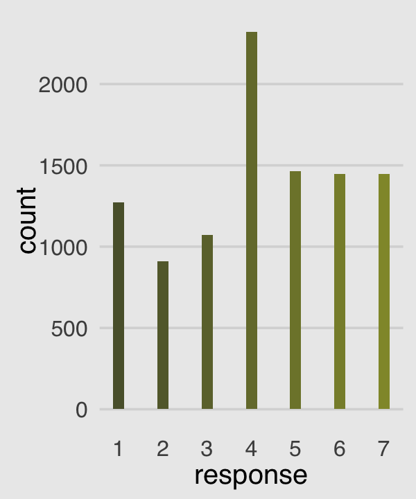
Our cumulative proportion plot, Figure 12.4.b, will require some pre-plot wrangling.
p2 <-
d %>%
count(response) %>%
mutate(pr_k = n / nrow(d),
cum_pr_k = cumsum(pr_k)) %>%
ggplot(aes(x = response, y = cum_pr_k,
fill = response)) +
geom_line(color = canva_pal("Green fields")(4)[2]) +
geom_point(shape = 21, color = "grey92",
size = 2.5, stroke = 1) +
scale_fill_gradient(low = canva_pal("Green fields")(4)[4],
high = canva_pal("Green fields")(4)[1]) +
scale_x_continuous(breaks = 1:7) +
scale_y_continuous("cumulative proportion",
breaks = c(0, .5, 1), limits = c(0, 1)) +
theme(axis.ticks = element_blank(),
axis.title.y = element_text(angle = 90),
legend.position = "none")
p2To re-describe the histogram as log-cumulative odds, we’ll need a series of intercept parameters. Each intercept will be on the log-cumulative-odds scale and stand in for the cumulative probability of each outcome. So this is just the application of the link function. The log-cumulative-odds that a response value \(y_i\) is equal-to-or-less-than some possible outcome value \(k\) is:
\[\log \frac{\operatorname{Pr}(y_i \leq k)}{1 - \operatorname{Pr}(y_i \leq k)} = \alpha_k\]
where \(\alpha_k\) is an “intercept” unique to each possible outcome value \(k\). (p. 383)
We can compute the \(\alpha_k\) estimates directly with a little help from McElreath’s custom logit() function.
logit <- function(x) log(x / (1 - x)) # convenience function
d %>%
count(response) %>%
mutate(pr_k = n / nrow(d),
cum_pr_k = cumsum(n / nrow(d))) %>%
mutate(alpha = logit(cum_pr_k) %>% round(digits = 2))## response n pr_k cum_pr_k alpha
## 1 1 1274 0.12829809 0.1282981 -1.92
## 2 2 909 0.09154079 0.2198389 -1.27
## 3 3 1071 0.10785498 0.3276939 -0.72
## 4 4 2323 0.23393756 0.5616314 0.25
## 5 5 1462 0.14723061 0.7088620 0.89
## 6 6 1445 0.14551863 0.8543807 1.77
## 7 7 1446 0.14561934 1.0000000 InfNow we plot those joints to make our version of Figure 12.4.c.
p3 <-
d %>%
count(response) %>%
mutate(cum_pr_k = cumsum(n / nrow(d))) %>%
filter(response < 7) %>%
# we can do the `logit()` conversion right in `ggplot()
ggplot(aes(x = response, y = logit(cum_pr_k), fill = response)) +
geom_line(color = canva_pal("Green fields")(4)[2]) +
geom_point(shape = 21, colour = "grey92",
size = 2.5, stroke = 1) +
scale_fill_gradient(low = canva_pal("Green fields")(4)[4],
high = canva_pal("Green fields")(4)[1]) +
scale_x_continuous(breaks = 1:7, limits = c(1, 7)) +
ylab("log-cumulative-odds") +
theme(axis.ticks = element_blank(),
axis.title.y = element_text(angle = 90),
legend.position = "none")
p3
Why not combine the three subplots with patchwork?
(p1 | p2 | p3) +
plot_annotation(title = "Re-describing a discrete distribution using log-cumulative-odds.")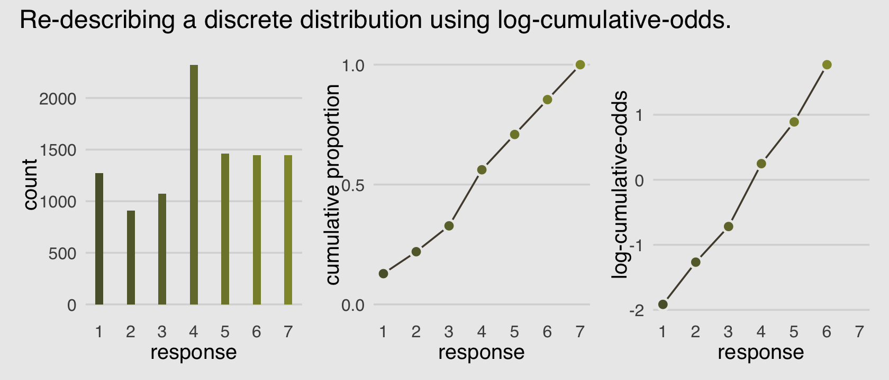
The code for Figure 12.5 is itself something of a monster.
d_plot <-
d %>%
count(response) %>%
mutate(pr_k = n / nrow(d),
cum_pr_k = cumsum(n / nrow(d)))
d_plot %>%
ggplot(aes(x = response, y = cum_pr_k,
color = cum_pr_k, fill = cum_pr_k)) +
geom_line(color = canva_pal("Green fields")(4)[1]) +
geom_point(shape = 21, colour = "grey92",
size = 2.5, stroke = 1) +
geom_linerange(aes(ymin = 0, ymax = cum_pr_k),
alpha = 1/2, color = canva_pal("Green fields")(4)[1]) +
# there must be more elegant ways to do this part
geom_linerange(data = . %>%
mutate(discrete_probability =
ifelse(response == 1, cum_pr_k,
cum_pr_k - pr_k)),
aes(x = response + .025,
ymin = ifelse(response == 1, 0, discrete_probability),
ymax = cum_pr_k),
color = "black") +
geom_text(data = tibble(
text = 1:7,
response = seq(from = 1.25, to = 7.25, by = 1),
cum_pr_k = d_plot$cum_pr_k - .065
), aes(label = text),
size = 4) +
scale_fill_gradient(low = canva_pal("Green fields")(4)[4],
high = canva_pal("Green fields")(4)[1]) +
scale_color_gradient(low = canva_pal("Green fields")(4)[4],
high = canva_pal("Green fields")(4)[1]) +
scale_x_continuous(breaks = 1:7) +
scale_y_continuous("cumulative proportion", breaks = c(0, .5, 1), limits = c(0, 1)) +
theme(axis.ticks = element_blank(),
axis.title.y = element_text(angle = 90),
legend.position = "none")A compact way to express the formula for this first type of statistical model is
\[\begin{align*} \text{response}_i & \sim \operatorname{Categorical} (\mathbf p) \\ \text{logit}(p_k) & = \alpha_k - \phi \\ \phi & = 0 \\ \alpha_k & \sim \operatorname{Normal}(0, 1.5), \end{align*}\]
where the \(\alpha_k\) term denotes the \(K - 1\) intercepts (cut points or thresholds) we use to describe each possible outcome value \(k\) and. The mysterious looking \(\phi\) term is a stand-in for the potential terms of the linear model. In the case where we have no predictors, it’s just 0. Just hold on to your hats; this will make more sense in the next section.
An ordered-logit distribution is really just a categorical distribution that takes a vector \(\mathbf p = \{p_1, p_2, p_3, p_4, p_5, p_6\}\) of probabilities of each response value below the maximum response (7 in this example). Each response value \(k\) in this vector is defined by its link to an intercept parameter, \(\alpha_k\). Finally, some weakly regularizing priors are placed on these intercepts. (p. 385)
Whereas in rethinking::ulam() you indicate the likelihood by <criterion> ~ dordlogit(0 , c(<the thresholds>), in brms::brm() you code family = cumulative. Here’s how to fit the intercepts-only model.
# define the start values
inits <- list(`Intercept[1]` = -2,
`Intercept[2]` = -1,
`Intercept[3]` = 0,
`Intercept[4]` = 1,
`Intercept[5]` = 2,
`Intercept[6]` = 2.5)
inits_list <- list(inits, inits, inits, inits)
b12.4 <-
brm(data = d,
family = cumulative,
response ~ 1,
prior(normal(0, 1.5), class = Intercept),
iter = 2000, warmup = 1000, cores = 4, chains = 4,
inits = inits_list, # here we add our start values
file = "fits/b12.04") McElreath needed to include the depth=2 argument in the rethinking::precis() function to show the threshold parameters from his m11.1stan model (R code 12.24). With a brm() fit, we just use print() or summary() as usual.
## Family: cumulative
## Links: mu = logit; disc = identity
## Formula: response ~ 1
## Data: d (Number of observations: 9930)
## Samples: 4 chains, each with iter = 2000; warmup = 1000; thin = 1;
## total post-warmup samples = 4000
##
## Population-Level Effects:
## Estimate Est.Error l-95% CI u-95% CI Rhat Bulk_ESS Tail_ESS
## Intercept[1] -1.92 0.03 -1.97 -1.86 1.00 2425 2274
## Intercept[2] -1.27 0.02 -1.31 -1.22 1.00 3828 2848
## Intercept[3] -0.72 0.02 -0.76 -0.68 1.00 4106 3519
## Intercept[4] 0.25 0.02 0.21 0.29 1.00 4635 3143
## Intercept[5] 0.89 0.02 0.85 0.93 1.00 4607 3756
## Intercept[6] 1.77 0.03 1.71 1.83 1.00 4254 3681
##
## Family Specific Parameters:
## Estimate Est.Error l-95% CI u-95% CI Rhat Bulk_ESS Tail_ESS
## disc 1.00 0.00 1.00 1.00 1.00 4000 4000
##
## Samples were drawn using sampling(NUTS). For each parameter, Bulk_ESS
## and Tail_ESS are effective sample size measures, and Rhat is the potential
## scale reduction factor on split chains (at convergence, Rhat = 1).What McElreath’s m12.4 summary termed cutpoints[k], our brms summary termed Intercept[k]. In both cases, these are the \(\alpha_k\) parameters from the formula, above (i.e., the thresholds). The summaries look like those in the text, the \(\widehat R\) values are great, and both measures of effective sample size are high. The results looks good.
We can use the brms::inv_logit_scaled() function to get these into the probability metric.
## Estimate Est.Error Q2.5 Q97.5
## Intercept[1] 0.1283074 0.5073187 0.1219904 0.1346918
## Intercept[2] 0.2198609 0.5060240 0.2118940 0.2279523
## Intercept[3] 0.3277441 0.5052919 0.3185029 0.3369117
## Intercept[4] 0.5615558 0.5050178 0.5516214 0.5710280
## Intercept[5] 0.7088031 0.5055075 0.6998148 0.7176410
## Intercept[6] 0.8543686 0.5072299 0.8473217 0.8613109But recall that the posterior \(SD\) (i.e., the ‘Est.Error’ values) are not valid using that approach. If you really care about them, you’ll need to work with the posterior_samples().
posterior_samples(b12.4) %>%
mutate_all(inv_logit_scaled) %>%
pivot_longer(starts_with("b_")) %>%
group_by(name) %>%
summarise(mean = mean(value),
sd = sd(value),
ll = quantile(value, probs = .025),
ul = quantile(value, probs = .975))## `summarise()` ungrouping output (override with `.groups` argument)## # A tibble: 6 x 5
## name mean sd ll ul
## <chr> <dbl> <dbl> <dbl> <dbl>
## 1 b_Intercept[1] 0.128 0.00328 0.122 0.135
## 2 b_Intercept[2] 0.220 0.00413 0.212 0.228
## 3 b_Intercept[3] 0.328 0.00466 0.319 0.337
## 4 b_Intercept[4] 0.562 0.00494 0.552 0.571
## 5 b_Intercept[5] 0.709 0.00455 0.700 0.718
## 6 b_Intercept[6] 0.854 0.00360 0.847 0.861Just to confirm, those posterior means are centered right around the cum_pr_k we computed for Figure 12.4.
## response cum_pr_k
## 1 1 0.1282981
## 2 2 0.2198389
## 3 3 0.3276939
## 4 4 0.5616314
## 5 5 0.7088620
## 6 6 0.8543807
## 7 7 1.0000000To walk out our results even further, we can make b12.4-based version of Figure 12.4.c after formatting our posterior summary a little.
fixef(b12.4) %>%
data.frame() %>%
rownames_to_column("intercept") %>%
mutate(response = str_extract(intercept, "\\d") %>% as.double()) %>%
ggplot(aes(x = response, y = Estimate,
ymin = Q2.5, ymax = Q97.5,
fill = response)) +
geom_line(color = canva_pal("Green fields")(4)[2]) +
geom_point(shape = 21, colour = "grey92",
size = 1.5, stroke = 1) +
geom_linerange(color = canva_pal("Green fields")(4)[2]) +
scale_fill_gradient(low = canva_pal("Green fields")(4)[4],
high = canva_pal("Green fields")(4)[1]) +
scale_x_continuous(breaks = 1:7, limits = c(1, 7)) +
ylab("log-cumulative-odds") +
theme(axis.ticks = element_blank(),
axis.title.y = element_text(angle = 90),
legend.position = "none")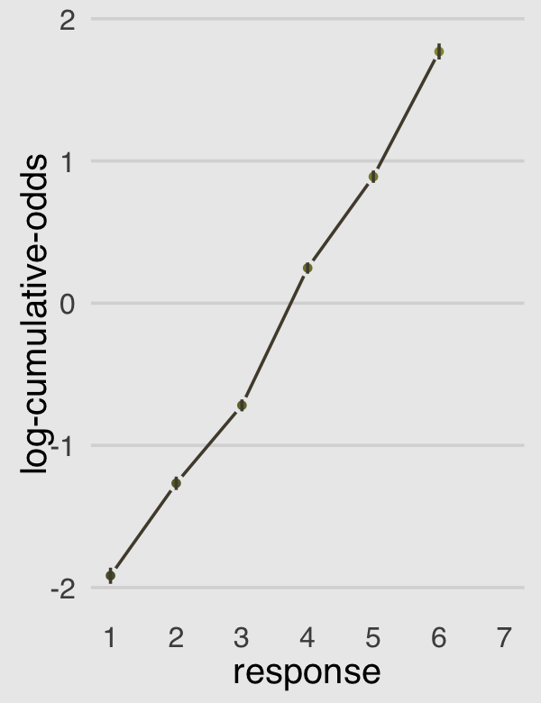
Now the dots are the posterior means and the vertical lines layered on top of them are their 95% posterior intervals. Given the large amount of data, the posteriors for our \(\alpha_k\) parameters are rather narrow, which is expressed in tightness of those vertical lines.
12.3.3 Adding predictor variables.
Now we define the linear model as \(\phi_i = \beta x_i\). Accordingly, the formula for our cumulative logit model becomes
\[\begin{align*} \log \frac{\operatorname{Pr} (y_i \leq k)}{1 - \operatorname{Pr} (y_i \leq k)} & = \alpha_k - \phi_i \\ \phi_i & = \beta x_i. \end{align*}\]
This form automatically ensures the correct ordering of the outcome values, while still morphing the likelihood of each individual value as the predictor \(x_i\) changes value. Why is the linear model \(\phi\) subtracted from each intercept? Because if we decrease the log-cumulative-odds of every outcome value \(k\) below the maximum, this necessarily shifts probability mass upwards towards higher outcome values. So then positive values of \(\beta\) mean increasing \(x\) also increases the mean \(y\). You could add \(\phi\) instead like \(\alpha_k + \phi_i\). But then \(\beta > 0\) would indicate increasing \(x\) decreases the mean. (p. 386)
I’m not aware that brms has an equivalent to the rethinking::dordlogit() function. So here we’ll make it by hand. The code comes from McElreath’s GitHub repo for rethinking.
logistic <- function(x) {
p <- 1 / (1 + exp(-x))
p <- ifelse(x == Inf, 1, p)
p
}
# now we get down to it
dordlogit <-
function(x, phi, a, log = FALSE) {
a <- c(as.numeric(a), Inf)
p <- logistic(a[x] - phi)
na <- c(-Inf, a)
np <- logistic(na[x] - phi)
p <- p - np
if (log == TRUE) p <- log(p)
p
}The dordlogit() function works like this:
## [1] 0.13 0.09 0.11 0.23 0.15 0.15 0.15Note the slight difference in how we used dordlogit() with a brm() fit summarized by fixef() than the way McElreath did with a ulam() fit summarized by coef(). McElreath just put coef(m12.4) into dordlogit(). We, however, more specifically placed fixef(b12.4)[, 1] into the function. With the [, 1] part, we specified that we were working with the posterior means (i.e., Estimate) and neglecting the other summaries (i.e., the posterior SDs and 95% intervals). If you forget to subset, chaos ensues.
Next, as McElreath further noted on page 338, “these probabilities imply an average outcome of:”
## [1] 4.19936I found that a bit abstract. Here’s the thing in a more elaborate tibble format.
(
explicit_example <-
tibble(probability_of_a_response = pk) %>%
mutate(the_response = 1:7) %>%
mutate(their_product = probability_of_a_response * the_response)
)## # A tibble: 7 x 3
## probability_of_a_response the_response their_product
## <dbl> <int> <dbl>
## 1 0.128 1 0.128
## 2 0.0916 2 0.183
## 3 0.108 3 0.324
## 4 0.234 4 0.935
## 5 0.147 5 0.736
## 6 0.146 6 0.873
## 7 0.146 7 1.02## # A tibble: 1 x 1
## average_outcome_value
## <dbl>
## 1 4.20Now we’ll try it by subtracting .5 from each.
# the probabilities of a given response
pk <- dordlogit(1:7, 0, fixef(b12.4)[, 1] - .5)
pk %>%
round(digits = 2)## [1] 0.08 0.06 0.08 0.21 0.16 0.18 0.22## [1] 4.729837So the rule is we subtract the linear model from each intercept. “This way, a positive \(\beta\) value indicates that an increase in the predictor variable \(x\) results in an increase in the average response” (p. 387). Happily, even though this makes for a somewhat confusing statistical formula, we still enter our predictor terms into the brm() formula argument much the same way we always have. As to our upcoming model, we might express the statistical formula as
\[\begin{align*} \text{response}_i & \sim \operatorname{Categorical} (\mathbf p) \\ \text{logit}(p_k) & = \alpha_k - \phi_i \\ \phi_i & = \beta_1 \text{action}_i + \beta_2 \text{contact}_i + (\beta_3 + \beta_4 \text{action}_i + \beta_5 \text{contact}_i) \text{intention}_i \\ \alpha_k & \sim \operatorname{Normal}(0, 1.5) \\ \beta_1, ..., \beta_5 & \sim \operatorname{Normal}(0, 0.5), \end{align*}\]
where, because we have included predictors, \(\phi\) is no longer set to 0. Using our skills from back in Chapter 8, we might also rewrite the linear model for \(\phi\) as
\[\phi_i = \beta_1 \text{action}_i + \beta_2 \text{contact}_i + \beta_3 \text{intention}_i + \beta_4 (\text{action}_i \times \text{intention}_i) + \beta_5 (\text{contact}_i \times \text{intention}_i).\]
Let’s fit the model.
b12.5 <-
brm(data = d,
family = cumulative,
response ~ 1 + action + contact + intention + intention:action + intention:contact,
prior = c(prior(normal(0, 1.5), class = Intercept),
prior(normal(0, 0.5), class = b)),
iter = 2000, warmup = 1000, cores = 4, chains = 4,
seed = 12,
file = "fits/b12.05")There are ways with brms to mirror how McElreath coded his phi <- bA*A + bC*C + BI*I and BI <- bI + bIA*A + bIC*C. Here we just used a more conventional style of syntax. Behold the summary.
## Family: cumulative
## Links: mu = logit; disc = identity
## Formula: response ~ 1 + action + contact + intention + intention:action + intention:contact
## Data: d (Number of observations: 9930)
## Samples: 4 chains, each with iter = 2000; warmup = 1000; thin = 1;
## total post-warmup samples = 4000
##
## Population-Level Effects:
## Estimate Est.Error l-95% CI u-95% CI Rhat Bulk_ESS Tail_ESS
## Intercept[1] -2.64 0.05 -2.73 -2.54 1.00 2743 2617
## Intercept[2] -1.94 0.05 -2.03 -1.85 1.00 2909 2531
## Intercept[3] -1.35 0.04 -1.43 -1.26 1.00 2839 2458
## Intercept[4] -0.31 0.04 -0.40 -0.23 1.00 2777 2761
## Intercept[5] 0.36 0.04 0.28 0.44 1.00 2723 2766
## Intercept[6] 1.26 0.05 1.17 1.36 1.00 2890 2832
## action -0.48 0.05 -0.58 -0.37 1.00 2778 2893
## contact -0.35 0.07 -0.47 -0.22 1.00 2913 2764
## intention -0.30 0.06 -0.40 -0.19 1.00 2754 2926
## action:intention -0.43 0.08 -0.58 -0.27 1.00 2868 2828
## contact:intention -1.23 0.10 -1.42 -1.05 1.00 2889 2759
##
## Family Specific Parameters:
## Estimate Est.Error l-95% CI u-95% CI Rhat Bulk_ESS Tail_ESS
## disc 1.00 0.00 1.00 1.00 1.00 4000 4000
##
## Samples were drawn using sampling(NUTS). For each parameter, Bulk_ESS
## and Tail_ESS are effective sample size measures, and Rhat is the potential
## scale reduction factor on split chains (at convergence, Rhat = 1).For a little variety, we’ll make our coefficient plot with a little help from the tidybayes::stat_gradientinterval() function.
labs <- str_c("beta[", 1:5, "]")
posterior_samples(b12.5) %>%
select(b_action:`b_contact:intention`) %>%
set_names(labs) %>%
pivot_longer(everything()) %>%
ggplot(aes(x = value, y = name)) +
geom_vline(xintercept = 0, alpha = 1/5, linetype = 3) +
stat_gradientinterval(.width = .5, size = 1, point_size = 3/2, shape = 21,
point_fill = canva_pal("Green fields")(4)[3],
fill = canva_pal("Green fields")(4)[1],
color = canva_pal("Green fields")(4)[2]) +
scale_x_continuous("marginal posterior", breaks = -5:0 / 4) +
scale_y_discrete(NULL, labels = parse(text = labs)) +
coord_cartesian(xlim = c(-1.4, 0))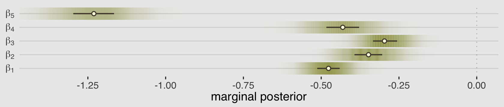
As always, this will all be easier to see if we plot the posterior predictions. There is no perfect way to plot the predictions of these log-cumulative-odds models. Why? Because each prediction is really a vector of probabilities, one for each possible outcome value. So as a predictor variable changes value, the entire vector changes. This kind of thing can be visualized in several different ways. (p. 388)
Our approach to making the top panels of Figure 12.6 will start with fitted().
nd <-
d %>%
distinct(action, contact, intention) %>%
mutate(combination = str_c(action, contact, intention, sep = "_"))
f <-
fitted(b12.5,
newdata = nd,
summary = F)
# what have we done?
f %>% str()## num [1:4000, 1:6, 1:7] 0.0818 0.0937 0.0922 0.0936 0.0985 ...
## - attr(*, "dimnames")=List of 3
## ..$ : NULL
## ..$ : NULL
## ..$ : chr [1:7] "1" "2" "3" "4" ...That returned a three-dimensional array. The 4,000 rows correspond to the 4,000 post-warmup iterations. The six columns correspond to the six unique combinations of action, contact, and intention within the data (i.e., d %>% distinct(action, contact, intention)). The three levels of the third dimension correspond to the seven levels of our response variable. This is all the information we need to plot our posterior in the triptych in the top row of Figure 12.6. It will take a bit of tricky wrangling to get it into a useful format. Our first several steps have to do with arranging the data into a long tibble format.
f <-
rbind(f[, , 1],
f[, , 2],
f[, , 3],
f[, , 4],
f[, , 5],
f[, , 6],
f[, , 7]) %>%
data.frame() %>%
set_names(pull(nd, combination)) %>%
mutate(response = rep(1:7, each = n() / 7),
iter = rep(1:4000, times = 7)) %>%
pivot_longer(-c(iter, response),
names_to = c("action", "contact", "intention"),
names_sep = "_",
values_to = "pk") %>%
mutate(intention = intention %>% as.integer())
# how do the data look, now?
glimpse(f)## Rows: 168,000
## Columns: 6
## $ response <int> 1, 1, 1, 1, 1, 1, 1, 1, 1, 1, 1, 1, 1, 1, 1, 1, 1, 1, 1, 1, 1, 1, 1, 1, 1, 1, 1, 1, 1, 1,…
## $ iter <int> 1, 1, 1, 1, 1, 1, 2, 2, 2, 2, 2, 2, 3, 3, 3, 3, 3, 3, 4, 4, 4, 4, 4, 4, 5, 5, 5, 5, 5, 5,…
## $ action <chr> "0", "0", "1", "0", "1", "0", "0", "0", "1", "0", "1", "0", "0", "0", "1", "0", "1", "0",…
## $ contact <chr> "1", "1", "0", "0", "0", "0", "1", "1", "0", "0", "0", "0", "1", "1", "0", "0", "0", "0",…
## $ intention <int> 0, 1, 0, 0, 1, 1, 0, 1, 0, 0, 1, 1, 0, 1, 0, 0, 1, 1, 0, 1, 0, 0, 1, 1, 0, 1, 0, 0, 1, 1,…
## $ pk <dbl> 0.08177003, 0.33149119, 0.10441114, 0.06330260, 0.18715418, 0.08440229, 0.09373010, 0.307…We’re moving pretty quickly, here. If it wasn’t apparent, the original values in the f data were in the probability metric. This is why we followed the convention from earlier in this section and named them pk. However, we need them to be in the cumulative-probability metric to make the top panels of the figure.
# to order our factor levels for `facet`
levels <- c("action=0, contact=0", "action=1, contact=0", "action=0, contact=1")
p1 <-
f %>%
# unnecessary for these plots
filter(response < 7) %>%
# this will help us define the three panels of the triptych
mutate(facet = factor(str_c("action=", action, ", contact=", contact),
levels = levels)) %>%
# these next three lines allow us to compute the cumulative probabilities
group_by(iter, facet, intention) %>%
arrange(iter, facet, intention, response) %>%
mutate(probability = cumsum(pk)) %>%
ungroup() %>%
# these next three lines are how we randomly selected 50 posterior draws
nest(data = -iter) %>%
sample_n(size = 50) %>%
unnest(data) %>%
# plot!
ggplot(aes(x = intention, y = probability)) +
geom_line(aes(group = interaction(iter, response), color = probability),
alpha = 1/10) +
geom_point(data = d %>% # wrangle the original data to make the dots
group_by(intention, contact, action) %>%
count(response) %>%
mutate(probability = cumsum(n / sum(n)),
facet = factor(str_c("action=", action, ", contact=", contact),
levels = levels)) %>%
filter(response < 7),
color = canva_pal("Green fields")(4)[2]) +
scale_color_gradient(low = canva_pal("Green fields")(4)[4],
high = canva_pal("Green fields")(4)[1]) +
scale_x_continuous("intention", breaks = 0:1) +
scale_y_continuous(breaks = c(0, .5, 1), limits = c(0, 1)) +
theme(legend.position = "none") +
facet_wrap(~facet)We will look at the results of our code in just a bit. For now, we’ll focus on the code for the triptych in the bottom panels of Figure 12.6. These plots will be based on predict().
## num [1:1000, 1:6] 3 1 5 7 1 4 1 7 2 2 ...
## - attr(*, "dimnames")=List of 2
## ..$ : NULL
## ..$ : NULL
## - attr(*, "levels")= chr [1:7] "1" "2" "3" "4" ...This time we have a simple two-dimensional array. There are only 1,000 rows because we set nsamples = 1000. Much like with fitted(), above, the six columns correspond to the sex unique combinations of our three predictor variables. With the scale = "response" argument, we requested our results were in the metric of the original data, which were response values ranging from 1 to 7. Compared to the last plot, the post-predict() data wrangling for this triptych is low-key. We just need the data in a long tibble format that includes a variable with which we might facet.
p2 <-
p %>%
data.frame() %>%
set_names(pull(nd, combination)) %>%
pivot_longer(everything(),
names_to = c("action", "contact", "intention"),
names_sep = "_",
values_to = "response") %>%
mutate(facet = factor(str_c("action=", action, ", contact=", contact),
levels = levels)) %>%
ggplot(aes(x = response, fill = intention)) +
geom_bar(width = 1/3, position = position_dodge(width = .4)) +
scale_fill_manual(values = canva_pal("Green fields")(4)[2:1]) +
scale_x_continuous("response", breaks = 1:7) +
theme(legend.position = "none") +
facet_wrap(~facet)Finally, we’re ready to combine our two triptychs into one glorious remake of Figure 12.6.
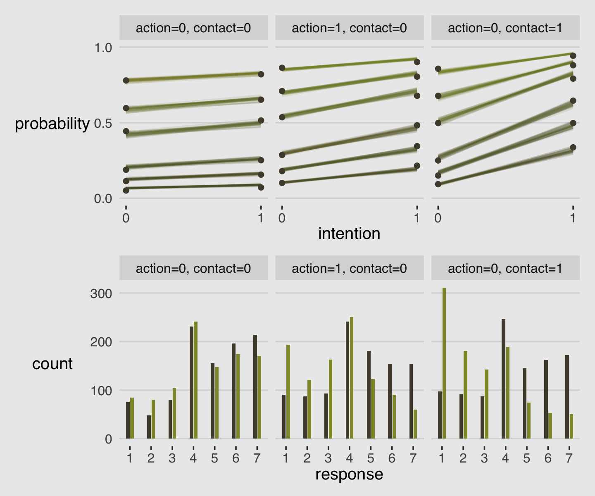
Just for kicks and giggles, I’d like to make an alternative version of Figure 12.6. The triptych on the top panels did a pretty good job depicting the model in terms of the thresholds, \(\alpha_k\). It’s important that we, the data analysts, have a good sense of what those are. However, I suspect many of our substantively-oriented colleagues will find themselves confused by a plot like that. In my field, people generally just want to know What’s the mean for each group? At this point, you and I know that such a question is a bit impoverished compared the to the rich output from a model like this. But if we do want to boil these analyses down to comparisons of means, McElreath has already showed us how. Look back to R code 12.20 through 12.23 (pp. 386–387). In those blocks, we multiplied the vector of probability values (pk) by their respective response values and summed, which produced an average outcome value. We can use that same approach so that our top triptych might express the results of the model in terms of means rather than parameters. All it takes is a slightly amended wrangling workflow with respect to the f data.
p1 <-
f %>%
mutate(facet = factor(str_c("action=", action, ", contact=", contact),
levels = levels)) %>%
group_by(iter, facet, intention) %>%
summarise(mean_response = sum(pk * response)) %>%
ungroup() %>%
nest(data = -iter) %>%
sample_n(size = 50) %>%
unnest(data) %>%
ggplot(aes(x = intention, y = mean_response)) +
geom_line(aes(group = iter, color = mean_response),
alpha = 1/10) +
scale_color_gradient(low = canva_pal("Green fields")(4)[4],
high = canva_pal("Green fields")(4)[1]) +
scale_x_continuous("intention", breaks = 0:1) +
scale_y_continuous("resopnse", breaks = 1:7, limits = c(1, 7)) +
theme(legend.position = "none") +
facet_wrap(~facet)I really like how intuitive the histograms were in McElreath’s bottom triptych. A limitation of that approach, however, is there is no direct expression of uncertainty. To address this, we might recall that the bars in the histogram are basically just reparameterizations of the pk values already in our f data and, happily, our vector of pk values already contains the uncertainty in the posterior. One way we might express that is with the tidybayes::stat_ccdfinterval() function, which will return a bar plot where the top parts of the bars depict our uncertainty in terms of cumulative density curves.
p2 <-
f %>%
mutate(facet = factor(str_c("action=", action, ", contact=", contact),
levels = levels)) %>%
ggplot(aes(x = response, y = pk, fill = factor(intention))) +
stat_ccdfinterval(.width = .95, justification = 1, size = 1/4,
shape = 21, point_fill = canva_pal("Green fields")(4)[3], point_size = 1/3,
position = "dodge", width = .75) +
scale_fill_manual(values = canva_pal("Green fields")(4)[2:1]) +
scale_x_continuous("resopnse", breaks = 1:7) +
scale_y_continuous("count", breaks = 0:3 / 10, labels = 0:3 * 100, limits = c(0, NA)) +
theme(legend.position = "none") +
facet_wrap(~facet)Here’s our alternative plot.
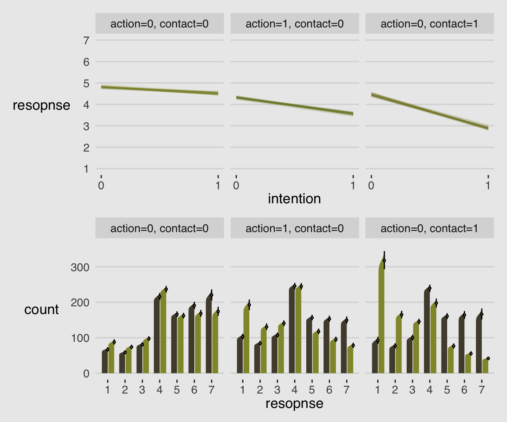
I suspect our stat_ccdfinterval() approach would work better in plots with fewer bars. But hopefully it gives you some ideas.
12.3.3.1 Rethinking: Staring into the abyss.
The plotting code for ordered logistic models is complicated, compared to that of models from previous chapters. But as models become more monstrous, so too does the code needed to compute predictions and display them. With power comes hardship. It’s better to see the guts of the machine than to live in awe or fear of it. (p. 391)
12.4 Ordered categorical predictors
We can handle ordered outcome variables using a categorical model with a cumulative link. That was the previous section. What about ordered predictor variables? We could just include them as continuous predictors like in any linear model. But this isn’t ideal. Just like with ordered outcomes, we don’t really want to assume that the distance between each ordinal value is the same. Luckily, we don’t have to. (p. 391)
Here are the eight levels of edu.
## edu
## 1 Middle School
## 2 Bachelor's Degree
## 3 Some College
## 4 Master's Degree
## 5 High School Graduate
## 6 Graduate Degree
## 7 Some High School
## 8 Elementary SchoolMcElreath defined his edu_new variable with an impressively compact couple lines of code. I’m going to take a more explicit approach with the dplyr::recode() function.
d <-
d %>%
mutate(edu_new =
recode(edu,
"Elementary School" = 1,
"Middle School" = 2,
"Some High School" = 3,
"High School Graduate" = 4,
"Some College" = 5,
"Bachelor's Degree" = 6,
"Master's Degree" = 7,
"Graduate Degree" = 8) %>%
as.integer())
# what did we do?
d %>%
distinct(edu, edu_new) %>%
arrange(edu_new)## edu edu_new
## 1 Elementary School 1
## 2 Middle School 2
## 3 Some High School 3
## 4 High School Graduate 4
## 5 Some College 5
## 6 Bachelor's Degree 6
## 7 Master's Degree 7
## 8 Graduate Degree 8The prior often used to handle monotonic effects is the Dirichlet distribution. The Dirichlet distribution is the multivariate extension of the beta distribution, which we met back in Section 12.1.1. Here we follow McElreath’s R code 12.32 to simulate a few draws from the Dirichlet distribution.
## num [1:10, 1:7] 0.1053 0.2504 0.1917 0.1241 0.0877 ...Plot delta with ggplot2.
delta %>%
data.frame() %>%
set_names(1:7) %>%
mutate(row = 1:n()) %>%
pivot_longer(-row, names_to = "index") %>%
ggplot(aes(x = index, y = value, group = row,
alpha = row == 3, color = row == 3)) +
geom_line() +
geom_point() +
scale_alpha_manual(values = c(1/3, 1)) +
scale_color_manual(values = canva_pal("Green fields")(4)[1:2]) +
ylab("probability") +
theme(legend.position = "none")The brms package has a rdirichlet() function, too. Here we use that to make an alternative version of the plot, above.
set.seed(12)
brms::rdirichlet(n = 1e4,
alpha = rep(2, 7)) %>%
data.frame() %>%
set_names(1:7) %>%
pivot_longer(everything()) %>%
mutate(name = name %>% as.double(),
alpha = str_c("alpha[", name, "]")) %>%
ggplot(aes(x = value, color = name, group = name, fill= name)) +
geom_density(alpha = .8) +
scale_fill_gradient(low = canva_pal("Green fields")(4)[2],
high = canva_pal("Green fields")(4)[3]) +
scale_color_gradient(low = canva_pal("Green fields")(4)[2],
high = canva_pal("Green fields")(4)[3]) +
scale_x_continuous("probability", limits = c(0, 1),
breaks = c(0, .5, 1), labels = c("0", ".5", "1"), ) +
scale_y_continuous(NULL, breaks = NULL) +
labs(subtitle = expression("Dirichlet"*(2*", "*2*", "*2*", "*2*", "*2*", "*2*", "*2))) +
theme(legend.position = "none") +
facet_wrap(~alpha, labeller = label_parsed, nrow = 2)When using brms, the issue of treating a predictor in the way McElreath covered in this section is referred to as monotonic effects. Bürkner outlined the issue in his (2020e) vignette, Estimating monotonic effects with with brms, and in his (2020) article with Emmanuel Charpentier, Modelling monotonic effects of ordinal predictors in Bayesian regression models (click here for the freely-available preprint). From the introduction in Bürkner’s vignette, we read:
For a single monotonic predictor, \(x\), the linear predictor term of observation \(n\) looks as follows:
\[\eta_n = b_D \sum_{i = 1}^{x_n} \zeta_i\]
The parameter \(b\) can take on any real value, while \(\zeta\) is a simplex, which means that it satisfies \(\zeta_i \in [0, 1]\) and \(\sum_{i = 1}^D \zeta_i = 1\) with \(D\) being the number of elements of \(\zeta\). Equivalently, \(D\) is the number of categories (or highest integer in the data) minus 1, since we start counting categories from zero to simplify the notation.
In this context, \(n\) indexes the observations in the hypothetical data and \(\eta\) denotes the linear model for some outcome \(y\). Unlike with rethinking, the brms syntax for fitting models with monotonic predictors is fairly simple. Just place your monotonic predictors within the mo() function and enter them into the formula. Here we fit our first monotonic model with brms.
b12.6 <-
brm(data = d,
family = cumulative,
response ~ 1 + action + contact + intention + mo(edu_new), # note the `mo()` syntax
prior = c(prior(normal(0, 1.5), class = Intercept),
prior(normal(0, 1), class = b),
# note the new kinds of prior statements
prior(normal(0, 0.143), class = b, coef = moedu_new),
prior(dirichlet(2, 2, 2, 2, 2, 2, 2), class = simo, coef = moedu_new1)),
iter = 2000, warmup = 1000, cores = 4, chains = 4,
seed = 12,
file = "fits/b12.06")In the text, McElreath remarked it took about 20 minutes to fit this model in his computer. Using my 2019 MacBook Pro, it took just under 40 minutes. Mind you, our brms version of the model used twice the number of warmup and post-warmup iterations, so this isn’t a knock against the sampling speed of brms versus rethinking. But either way, get ready to wait a while when fitting a model like this. Here’s the summary.
## Family: cumulative
## Links: mu = logit; disc = identity
## Formula: response ~ 1 + action + contact + intention + mo(edu_new)
## Data: d (Number of observations: 9930)
## Samples: 4 chains, each with iter = 2000; warmup = 1000; thin = 1;
## total post-warmup samples = 4000
##
## Population-Level Effects:
## Estimate Est.Error l-95% CI u-95% CI Rhat Bulk_ESS Tail_ESS
## Intercept[1] -3.12 0.16 -3.47 -2.85 1.00 1898 2057
## Intercept[2] -2.44 0.16 -2.78 -2.17 1.00 1913 2064
## Intercept[3] -1.86 0.16 -2.20 -1.59 1.00 1900 2020
## Intercept[4] -0.84 0.15 -1.18 -0.57 1.00 1923 2157
## Intercept[5] -0.17 0.15 -0.51 0.09 1.00 1906 2171
## Intercept[6] 0.74 0.15 0.39 1.01 1.00 1961 2159
## action -0.71 0.04 -0.79 -0.63 1.00 3962 2843
## contact -0.96 0.05 -1.06 -0.86 1.00 3993 2745
## intention -0.72 0.04 -0.79 -0.65 1.00 4772 2936
## moedu_new -0.05 0.02 -0.11 -0.01 1.00 1851 2001
##
## Simplex Parameters:
## Estimate Est.Error l-95% CI u-95% CI Rhat Bulk_ESS Tail_ESS
## moedu_new1[1] 0.25 0.15 0.04 0.58 1.00 2649 2676
## moedu_new1[2] 0.14 0.09 0.02 0.36 1.00 3934 2171
## moedu_new1[3] 0.19 0.11 0.03 0.43 1.00 3827 2589
## moedu_new1[4] 0.17 0.09 0.03 0.39 1.00 3466 2598
## moedu_new1[5] 0.04 0.04 0.00 0.12 1.00 2925 2369
## moedu_new1[6] 0.09 0.06 0.01 0.25 1.00 4047 2926
## moedu_new1[7] 0.12 0.08 0.02 0.30 1.00 4027 2804
##
## Family Specific Parameters:
## Estimate Est.Error l-95% CI u-95% CI Rhat Bulk_ESS Tail_ESS
## disc 1.00 0.00 1.00 1.00 1.00 4000 4000
##
## Samples were drawn using sampling(NUTS). For each parameter, Bulk_ESS
## and Tail_ESS are effective sample size measures, and Rhat is the potential
## scale reduction factor on split chains (at convergence, Rhat = 1).If you compare our results to those in the text, you may be surprised by how small our summary values are for moedu_new. brms and rethinking have an important difference in how they parameterize \(\beta_\text{Education}\). From page 392 in the text, McElreath explained the
sum of all the \(\delta\) parameters is the maximum education effect. It will be very convenient for interpretation if we call this maximum sum an ordinary coefficient like \(\beta_\text{E}\) and then let the \(\delta\) parameters be fractions of it. If we also make a dummy \(\delta_0 = 0\) then we can write it all very compactly. Like this:
\[\phi_i = \beta_\text{E} \sum_{j = 0}^{\text{E}_i - 1} \delta_j + \text{other stuff}\]
where \(\text{E}_i\) is the completed education level of individual \(i\). Now the sum of every \(\delta_j\) is 1, and we can interpret the maximum education effect by looking at \(\beta_\text{E}\).
The current version of brms takes expresses \(\beta_\text{E}\) as an average effect. From Bürkner & Charpentier (2020), we read:
If the monotonic effect is used in a linear model, \(b\) can be interpreted as the expected average difference between two adjacent categories of \(x\), while \(\zeta_i\) describes the expected difference between the categories \(i\) and \(i - 1\) in the form of a proportion of the overall difference between lowest and highest categories. Thus, this parameterization has an intuitive interpretation while guaranteeing the monotonicity of the effect (p. 6)
To clarify, the \(b\) in this section is what we’re calling \(\beta_\text{E}\) in the current example and Bürkner and Charpentier used \(\zeta_i\) in place of McElreath’s \(\delta_j\). The upshot of all this is that if we’d like to compare the summary of our b12.6 to the results McElreath reported for his m12.6, we’ll need to multiply our moedu_new by 7.
posterior_samples(b12.6) %>%
transmute(bE = bsp_moedu_new * 7) %>%
median_qi(.width = .89) %>%
mutate_if(is.double, round, digits = 2)## bE .lower .upper .width .point .interval
## 1 -0.35 -0.65 -0.11 0.89 median qiThis parameterization difference between brms and rethinking is also the reason why we set prior(normal(0, 0.143), class = b, coef = moedu_new) within b12.6 where as McElreath used a \(\operatorname{Normal}(0, 1)\) prior for all his \(\beta\) coefficients, including for his bE. Because our moedu_new (i.e., \(\beta_\text{E}\)) is parameterized as the average of seven \(\delta\) parameters, it made sense to divide our hyperparameter for \(\sigma\) by 7. That is, \(1 / 7 \approx 0.143\).
This might be a good place to practice expressing our model in formal statistical notation. Here we’ll complement McElreath’s formula from page 392 by mixing in a little notation from Bürkner & Charpentier (2020):
\[\begin{align*} \text{response}_i & \sim \operatorname{Categorical} (\mathbf p) \\ \text{logit}(p_k) & = \alpha_k - \phi_i \\ \phi_i & = \beta_1 \text{action}_i + \beta_2 \text{contact}_i + \beta_3 \text{intention}_i + \beta_4 \operatorname{mo}(\text{edu_new}_i, \boldsymbol{\delta}) \\ \alpha_k & \sim \operatorname{Normal}(0, 1.5) \\ \beta_1,..., \beta_3 & \sim \operatorname{Normal}(0, 1) \\ \beta_4 & \sim \operatorname{Normal}(0, 0.143) \\ \boldsymbol{\delta} & \sim \operatorname{Dirichlet}(2, 2, 2, 2, 2, 2, 2), \end{align*}\]
where \(\operatorname{mo}(x, \boldsymbol{\delta})\) is an operator indicating some predictor \(x\) is has undergone the monotonic transform and \(\boldsymbol{\delta}\) is our vector of simplex parameters \(\delta_1,..., \delta_7\). That is, \(\beta_4 \operatorname{mo}(\text{edu_new}_i, \boldsymbol{\delta})\) is our alternative brms-oriented way of expressing McElreath’s \(\beta_\text{E} \sum_{j = 0}^{\text{E}_i - 1} \delta_j\). I don’t know that one is better. 🤷🏻 At first contact, I found them both confusing.
Since this will be our only pairs plot for this chapter, let’s use GGally::ggpairs() to make it fancy. First we customize the panels.
my_lower <- function(data, mapping, ...) {
# get the x and y data to use the other code
x <- eval_data_col(data, mapping$x)
y <- eval_data_col(data, mapping$y)
# compute the correlations
corr <- cor(x, y, method = "p", use = "pairwise")
abs_corr <- abs(corr)
# plot the cor value
ggally_text(
label = formatC(corr, digits = 2, format = "f") %>% str_replace(., "0.", "."),
mapping = aes(),
size = 4,
color = canva_pal("Green fields")(4)[2]) +
scale_x_continuous(NULL, breaks = NULL) +
scale_y_continuous(NULL, breaks = NULL)
}
my_diag <- function(data, mapping, ...) {
ggplot(data = data, mapping = mapping) +
geom_density(fill = canva_pal("Green fields")(4)[1], size = 0) +
scale_x_continuous(NULL, breaks = NULL) +
scale_y_continuous(NULL, breaks = NULL)
}
my_upper <- function(data, mapping, ...) {
ggplot(data = data, mapping = mapping) +
geom_hex(bins = 18) +
scale_fill_gradient(low = canva_pal("Green fields")(4)[4],
high = canva_pal("Green fields")(4)[3]) +
scale_x_continuous(NULL, breaks = NULL) +
scale_y_continuous(NULL, breaks = NULL) +
theme(panel.background = element_rect(fill = canva_pal("Green fields")(4)[2]))
}Now we are ready to make our custom version of the pairs plot in Figure 12.8.
library(GGally)
delta_labels <- c("Elem", "MidSch", "SHS", "HSG", "SCol", "Bach", "Mast", "Grad")
posterior_samples(b12.6) %>%
select(contains("simo_moedu_new1")) %>%
set_names(str_c(delta_labels[2:8], "~(delta[", 1:7, "])")) %>%
ggpairs(upper = list(continuous = my_upper),
diag = list(continuous = my_diag),
lower = list(continuous = my_lower),
labeller = label_parsed) +
theme(strip.text = element_text(size = 8))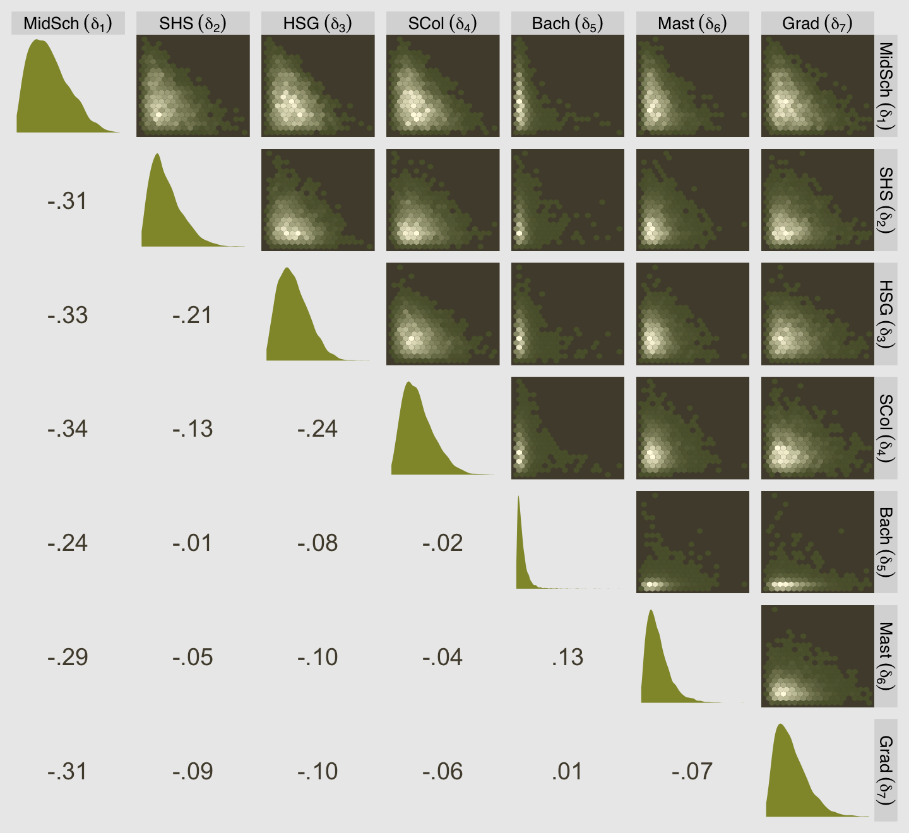
Here we add a normalized version of edu_new called edu_norm.
d <-
d %>%
mutate(edu_norm = (edu_new - 1) / 7)
# what does this look like?
d %>%
distinct(edu, edu_new, edu_norm) %>%
arrange(edu_new)## edu edu_new edu_norm
## 1 Elementary School 1 0.0000000
## 2 Middle School 2 0.1428571
## 3 Some High School 3 0.2857143
## 4 High School Graduate 4 0.4285714
## 5 Some College 5 0.5714286
## 6 Bachelor's Degree 6 0.7142857
## 7 Master's Degree 7 0.8571429
## 8 Graduate Degree 8 1.0000000Now fit the more conventional model.
b12.7 <-
brm(data = d,
family = cumulative,
response ~ 1 + action + contact + intention + edu_norm,
prior = c(prior(normal(0, 1.5), class = Intercept),
prior(normal(0, 1), class = b)),
iter = 2000, warmup = 1000, cores = 4, chains = 4,
seed = 12,
file = "fits/b12.07")## Estimate Est.Error Q2.5 Q97.5
## action -0.7065217 0.04062075 -0.7835762 -0.62763964
## contact -0.9584785 0.05073591 -1.0572652 -0.85913421
## intention -0.7191983 0.03603597 -0.7914742 -0.65006562
## edu_norm -0.1132587 0.09246165 -0.2935643 0.06527575It might be nice to get a better sense of the two models with a plot. For our approach, we’ll use fitted(). Start with b12.6.
nd <-
tibble(edu_new = 1:8,
action = 0,
contact = 0,
intention = 0)
f <-
fitted(b12.6,
newdata = nd)
f %>% str()## num [1:8, 1:4, 1:7] 0.0426 0.0469 0.0491 0.0524 0.0553 ...
## - attr(*, "dimnames")=List of 3
## ..$ : NULL
## ..$ : chr [1:4] "Estimate" "Est.Error" "Q2.5" "Q97.5"
## ..$ : chr [1:7] "1" "2" "3" "4" ...The rows correspond to the eight educational levels. The columns are the typical summary columns. The seven levels of the third dimension are the seven levels of response. Before we plot, we’re going to need to wrangle that a little and then do the same thing all over for b12.7.
# b12.6
f12.6 <-
rbind(f[, , 1],
f[, , 2],
f[, , 3],
f[, , 4],
f[, , 5],
f[, , 6],
f[, , 7]) %>%
data.frame() %>%
mutate(edu = factor(rep(1:8, times = 7)),
response = rep(1:7, each = 8))
# b12.7
nd <-
nd %>%
mutate(edu_norm = 1:8)
f <-
fitted(b12.7,
newdata = nd)
f12.7 <-
rbind(f[, , 1],
f[, , 2],
f[, , 3],
f[, , 4],
f[, , 5],
f[, , 6],
f[, , 7]) %>%
data.frame() %>%
mutate(edu = factor(rep(1:8, times = 7)),
response = rep(1:7, each = 8))Now combine the two data objects and plot.
# this will help with `scale_color_manual()`
colors <-
scales::seq_gradient_pal(canva_pal("Green fields")(4)[4],
canva_pal("Green fields")(4)[3])(seq(0, 1, length.out = 8))
bind_rows(f12.6, f12.7) %>%
mutate(fit = rep(c("b12.6 with `mo()` syntax", "b12.7 with conventional syntax"),
each = n() / 2)) %>%
ggplot(aes(x = response, y = Estimate,
ymin = Q2.5, ymax = Q97.5,
color = edu, group = edu)) +
geom_pointrange(fatten = 3/2, position = position_dodge(width = 3/4)) +
scale_color_manual("education", values = colors, labels = delta_labels) +
scale_x_continuous(breaks = 1:7) +
scale_y_continuous("probability", limits = c(0, .43)) +
theme(legend.background = element_blank(),
legend.position = "right") +
facet_wrap(~fit) In case you were curious, the PSIS-LOO suggests the monotonic model (b12.6) made better sense of the data.
b12.6 <- add_criterion(b12.6, "loo")
b12.7 <- add_criterion(b12.7, "loo")
loo_compare(b12.6, b12.7, criterion = "loo") %>% print(simplify = F)## elpd_diff se_diff elpd_loo se_elpd_loo p_loo se_p_loo looic se_looic
## b12.6 0.0 0.0 -18540.8 38.1 11.1 0.1 37081.5 76.3
## b12.7 -4.4 1.8 -18545.1 38.1 10.0 0.1 37090.3 76.2## b12.6 b12.7
## 0.99 0.01We might explore the monotonic effects of b12.6 in one more way. If you were reading closely along in the text, you may have noticed that “the sum of every \(\delta_j\) is 1” (p. 392). When using HMC, this is true for each posterior draw. We can exploit that information to visualize the \(\delta_j\) parameters in a cumulative fashion.
posterior_samples(b12.6) %>%
select(contains("new1")) %>%
set_names(1:7) %>%
mutate(iter = 1:n(),
`0` = 0) %>%
pivot_longer(-iter,
names_to = "delta") %>%
arrange(delta) %>%
group_by(iter) %>%
mutate(cum_sum = cumsum(value)) %>%
ggplot(aes(x = delta, y = cum_sum)) +
stat_pointinterval(.width = .95, size = 1,
color = canva_pal("Green fields")(4)[1]) +
stat_pointinterval(.width = .5,
color = canva_pal("Green fields")(4)[4],
point_color = canva_pal("Green fields")(4)[2]) +
scale_x_discrete(NULL, labels = parse(text = str_c("delta[", 0:7 , "]"))) +
ylab("cumulative sum")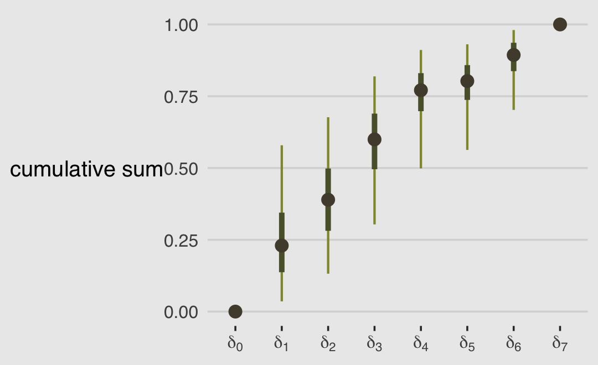
This is another way to show that the largest effects of education are when going from Elementary School to Middle School (\(\delta_0 \rightarrow \delta_1\)) and when going from Some High School to High School Graduate (\(\delta_2 \rightarrow \delta_3\)).
## edu edu_new delta[j]
## 1 Elementary School 1 0
## 2 Middle School 2 1
## 3 Some High School 3 2
## 4 High School Graduate 4 3
## 5 Some College 5 4
## 6 Bachelor's Degree 6 5
## 7 Master's Degree 7 6
## 8 Graduate Degree 8 712.5 Summary
“This chapter introduced several new types of regression, all of which are generalizations of generalized linear models (GLMs)” (p. 397). This chapter has been a ride. If you’d like more practice with the negative-binomial model and some of the others models for categorical data we covered in this chapter and in Chapter 11, Alan Agresti covered them extensively in his (2015) text, Foundations of linear and generalized linear models. For more on different kinds of zero-inflated count models, check out Atkins et al. (2013), A tutorial on count regression and zero-altered count models for longitudinal substance use data. If you’d like to learn more about using cumulative probabilities to model ordinal data in brms, check out Bürkner and Vuorre’s (2019) Ordinal regression models in psychology: A tutorial and its repository on the Open Science Framework. Also check out Chapter 23 of my (2020b) ebook Doing Bayesian Data Analysis in brms and the tidyverse were we model ordinal data with a series of cumulative probit models.
Session info
## R version 3.6.3 (2020-02-29)
## Platform: x86_64-apple-darwin15.6.0 (64-bit)
## Running under: macOS Catalina 10.15.3
##
## Matrix products: default
## BLAS: /Library/Frameworks/R.framework/Versions/3.6/Resources/lib/libRblas.0.dylib
## LAPACK: /Library/Frameworks/R.framework/Versions/3.6/Resources/lib/libRlapack.dylib
##
## locale:
## [1] en_US.UTF-8/en_US.UTF-8/en_US.UTF-8/C/en_US.UTF-8/en_US.UTF-8
##
## attached base packages:
## [1] parallel stats graphics grDevices utils datasets methods base
##
## other attached packages:
## [1] GGally_1.5.0 gtools_3.8.2 patchwork_1.0.1.9000 tidybayes_2.1.1 brms_2.13.0
## [6] Rcpp_1.0.5 dagitty_0.2-2 rstan_2.19.3 StanHeaders_2.21.0-1 forcats_0.5.0
## [11] stringr_1.4.0 dplyr_1.0.1 purrr_0.3.4 readr_1.3.1 tidyr_1.1.1
## [16] tibble_3.0.3 ggplot2_3.3.2 tidyverse_1.3.0 ggthemes_4.2.0
##
## loaded via a namespace (and not attached):
## [1] readxl_1.3.1 backports_1.1.8 RcppEigen_0.3.3.7.0 plyr_1.8.6 igraph_1.2.5
## [6] splines_3.6.3 svUnit_1.0.3 crosstalk_1.1.0.1 TH.data_1.0-10 rstantools_2.0.0
## [11] inline_0.3.15 digest_0.6.25 htmltools_0.5.0 rsconnect_0.8.16 fansi_0.4.1
## [16] magrittr_1.5 BH_1.72.0-3.1 modelr_0.1.6 matrixStats_0.56.0 xts_0.12-0
## [21] sandwich_2.5-1 prettyunits_1.1.1 colorspace_1.4-1 rvest_0.3.5 ggdist_2.1.1
## [26] haven_2.2.0 xfun_0.13 hexbin_1.28.1 callr_3.4.3 crayon_1.3.4
## [31] jsonlite_1.7.0 survival_3.1-12 zoo_1.8-7 glue_1.4.1 gtable_0.3.0
## [36] emmeans_1.4.5 V8_3.0.2 pkgbuild_1.1.0 shape_1.4.4 abind_1.4-5
## [41] scales_1.1.1 mvtnorm_1.1-0 emo_0.0.0.9000 DBI_1.1.0 miniUI_0.1.1.1
## [46] xtable_1.8-4 stats4_3.6.3 DT_0.13 htmlwidgets_1.5.1 httr_1.4.1
## [51] threejs_0.3.3 arrayhelpers_1.1-0 RColorBrewer_1.1-2 ellipsis_0.3.1 reshape_0.8.8
## [56] pkgconfig_2.0.3 loo_2.2.0 farver_2.0.3 dbplyr_1.4.2 utf8_1.1.4
## [61] tidyselect_1.1.0 labeling_0.3 rlang_0.4.7 reshape2_1.4.4 later_1.1.0.1
## [66] munsell_0.5.0 cellranger_1.1.0 tools_3.6.3 cli_2.0.2 generics_0.0.2
## [71] broom_0.5.5 ggridges_0.5.2 evaluate_0.14 fastmap_1.0.1 yaml_2.2.1
## [76] processx_3.4.3 knitr_1.28 fs_1.4.1 nlme_3.1-144 mime_0.9
## [81] xml2_1.3.1 compiler_3.6.3 bayesplot_1.7.1 shinythemes_1.1.2 rstudioapi_0.11
## [86] curl_4.3 reprex_0.3.0 stringi_1.4.6 ps_1.3.4 Brobdingnag_1.2-6
## [91] lattice_0.20-38 Matrix_1.2-18 markdown_1.1 shinyjs_1.1 vctrs_0.3.2
## [96] pillar_1.4.6 lifecycle_0.2.0 bridgesampling_1.0-0 estimability_1.3 httpuv_1.5.4
## [101] R6_2.4.1 bookdown_0.18 promises_1.1.1 gridExtra_2.3 codetools_0.2-16
## [106] boot_1.3-24 colourpicker_1.0 MASS_7.3-51.5 assertthat_0.2.1 withr_2.2.0
## [111] shinystan_2.5.0 multcomp_1.4-13 hms_0.5.3 grid_3.6.3 coda_0.19-3
## [116] rmarkdown_2.1 shiny_1.5.0 lubridate_1.7.8 base64enc_0.1-3 dygraphs_1.1.1.6References
Agresti, A. (2015). Foundations of linear and generalized linear models. John Wiley & Sons. https://www.wiley.com/en-us/Foundations+of+Linear+and+Generalized+Linear+Models-p-9781118730034
Atkins, D. C., Baldwin, S. A., Zheng, C., Gallop, R. J., & Neighbors, C. (2013). A tutorial on count regression and zero-altered count models for longitudinal substance use data. Psychology of Addictive Behaviors : Journal of the Society of Psychologists in Addictive Behaviors, 27(1), 166–177. https://doi.org/10.1037/a0029508
Bürkner, P.-C. (2020a). Define custom response distributions with brms. https://CRAN.R-project.org/package=brms/vignettes/brms_customfamilies.html
Bürkner, P.-C. (2020b). Estimating distributional models with brms. https://CRAN.R-project.org/package=brms/vignettes/brms_distreg.html
Bürkner, P.-C. (2020e). Estimating monotonic effects with brms. https://CRAN.R-project.org/package=brms/vignettes/brms_monotonic.html
Bürkner, P.-C. (2020i). Parameterization of response distributions in brms. https://CRAN.R-project.org/package=brms/vignettes/brms_families.html
Bürkner, P.-C., & Charpentier, E. (2020). Modelling monotonic effects of ordinal predictors in Bayesian regression models. British Journal of Mathematical and Statistical Psychology. https://doi.org/10.1111/bmsp.12195
Bürkner, P.-C., & Vuorre, M. (2019). Ordinal regression models in psychology: A tutorial. Advances in Methods and Practices in Psychological Science, 2(1), 77–101. https://doi.org/10.1177/2515245918823199
Cushman, F., Young, L., & Hauser, M. (2006). The role of conscious reasoning and intuition in moral judgment: Testing three principles of harm. Psychological Science, 17(12), 1082–1089. https://doi.org/10.1111/j.1467-9280.2006.01834.x
Kruschke, J. K. (2015). Doing Bayesian data analysis: A tutorial with R, JAGS, and Stan. Academic Press. https://sites.google.com/site/doingbayesiandataanalysis/
Kurz, A. S. (2020b). Doing Bayesian data analysis in brms and the tidyverse (version 0.2.0). https://bookdown.org/content/3686/
McElreath, R. (2020a). Statistical rethinking: A Bayesian course with examples in R and Stan (Second edition). CRC Press. https://xcelab.net/rm/statistical-rethinking/
Stan Development Team. (2020b). Stan functions reference. https://mc-stan.org/docs/2_23/functions-reference/index.html